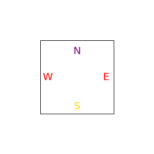
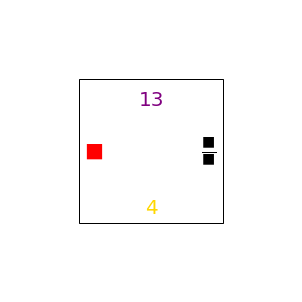
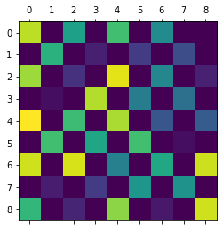
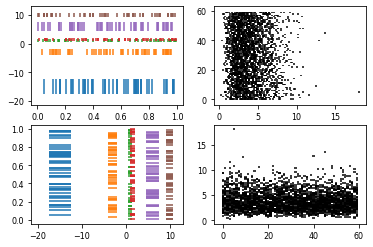
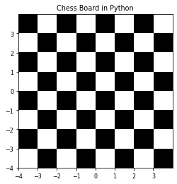
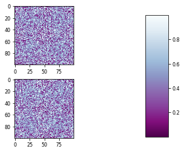

<!DOCTYPE html>

<html>
  <head>
    <meta charset="utf-8" />
    <meta name="viewport" content="width=device-width, initial-scale=1.0" /><meta name="generator" content="Docutils 0.17.1: http://docutils.sourceforge.net/" />

    <title>these are just my notes as I learn matplotlib in order to display tile sets assoicsated to 1# programs &#8212; Invitation to Computabitlity</title>
    
  <!-- Loaded before other Sphinx assets -->
  <link href="_static/styles/theme.css?digest=1999514e3f237ded88cf" rel="stylesheet">
<link href="_static/styles/pydata-sphinx-theme.css?digest=1999514e3f237ded88cf" rel="stylesheet">

    
  <link rel="stylesheet"
    href="_static/vendor/fontawesome/5.13.0/css/all.min.css">
  <link rel="preload" as="font" type="font/woff2" crossorigin
    href="_static/vendor/fontawesome/5.13.0/webfonts/fa-solid-900.woff2">
  <link rel="preload" as="font" type="font/woff2" crossorigin
    href="_static/vendor/fontawesome/5.13.0/webfonts/fa-brands-400.woff2">

    <link rel="stylesheet" type="text/css" href="_static/pygments.css" />
    <link rel="stylesheet" href="_static/styles/sphinx-book-theme.css?digest=5115cc725059bd94278eecd172e13a965bf8f5a9" type="text/css" />
    <link rel="stylesheet" type="text/css" href="_static/togglebutton.css" />
    <link rel="stylesheet" type="text/css" href="_static/copybutton.css" />
    <link rel="stylesheet" type="text/css" href="_static/mystnb.css" />
    <link rel="stylesheet" type="text/css" href="_static/sphinx-thebe.css" />
    <link rel="stylesheet" type="text/css" href="_static/design-style.b7bb847fb20b106c3d81b95245e65545.min.css" />
    
  <!-- Pre-loaded scripts that we'll load fully later -->
  <link rel="preload" as="script" href="_static/scripts/pydata-sphinx-theme.js?digest=1999514e3f237ded88cf">

    <script data-url_root="./" id="documentation_options" src="_static/documentation_options.js"></script>
    <script src="_static/jquery.js"></script>
    <script src="_static/underscore.js"></script>
    <script src="_static/doctools.js"></script>
    <script src="_static/clipboard.min.js"></script>
    <script src="_static/copybutton.js"></script>
    <script src="_static/scripts/sphinx-book-theme.js?digest=9c920249402e914e316237a7dbc6769907cce411"></script>
    <script>let toggleHintShow = 'Click to show';</script>
    <script>let toggleHintHide = 'Click to hide';</script>
    <script>let toggleOpenOnPrint = 'true';</script>
    <script src="_static/togglebutton.js"></script>
    <script>var togglebuttonSelector = '.toggle, .admonition.dropdown, .tag_hide_input div.cell_input, .tag_hide-input div.cell_input, .tag_hide_output div.cell_output, .tag_hide-output div.cell_output, .tag_hide_cell.cell, .tag_hide-cell.cell';</script>
    <script src="_static/design-tabs.js"></script>
    <script>const THEBE_JS_URL = "https://unpkg.com/thebe@0.8.2/lib/index.js"
const thebe_selector = ".thebe,.cell"
const thebe_selector_input = "pre"
const thebe_selector_output = ".output, .cell_output"
</script>
    <script async="async" src="_static/sphinx-thebe.js"></script>
    <link rel="index" title="Index" href="genindex.html" />
    <link rel="search" title="Search" href="search.html" />
    <meta name="viewport" content="width=device-width, initial-scale=1" />
    <meta name="docsearch:language" content="None">
    

    <!-- Google Analytics -->
    
  </head>
  <body data-spy="scroll" data-target="#bd-toc-nav" data-offset="60">
<!-- Checkboxes to toggle the left sidebar -->
<input type="checkbox" class="sidebar-toggle" name="__navigation" id="__navigation" aria-label="Toggle navigation sidebar">
<label class="overlay overlay-navbar" for="__navigation">
    <div class="visually-hidden">Toggle navigation sidebar</div>
</label>
<!-- Checkboxes to toggle the in-page toc -->
<input type="checkbox" class="sidebar-toggle" name="__page-toc" id="__page-toc" aria-label="Toggle in-page Table of Contents">
<label class="overlay overlay-pagetoc" for="__page-toc">
    <div class="visually-hidden">Toggle in-page Table of Contents</div>
</label>
<!-- Headers at the top -->
<div class="announcement header-item noprint"></div>
<div class="header header-item noprint"></div>

    
    <div class="container-fluid" id="banner"></div>

    

    <div class="container-xl">
      <div class="row">
          
<!-- Sidebar -->
<div class="bd-sidebar noprint" id="site-navigation">
    <div class="bd-sidebar__content">
        <div class="bd-sidebar__top"><div class="navbar-brand-box">
    <a class="navbar-brand text-wrap" href="index.html">
      
        <!-- `logo` is deprecated in Sphinx 4.0, so remove this when we stop supporting 3 -->
        
      
      
      
      
      
      <h1 class="site-logo" id="site-title">Invitation to Computabitlity</h1>
      
    </a>
</div><form class="bd-search d-flex align-items-center" action="search.html" method="get">
  <i class="icon fas fa-search"></i>
  <input type="search" class="form-control" name="q" id="search-input" placeholder="Search this book..." aria-label="Search this book..." autocomplete="off" >
</form><nav class="bd-links" id="bd-docs-nav" aria-label="Main">
    <div class="bd-toc-item active">
        
        <ul class="nav bd-sidenav bd-sidenav__home-link">
            <li class="toctree-l1">
                <a class="reference internal" href="index.html">
                    Invitation to Computability
                </a>
            </li>
        </ul>
        <ul class="nav bd-sidenav">
 <li class="toctree-l1">
  <a class="reference internal" href="getting_started.html">
   <span style="color:blue">
    Getting stared with 1#
   </span>
  </a>
 </li>
 <li class="toctree-l1">
  <a class="reference internal" href="halting.html">
   How programs “halt”
  </a>
 </li>
 <li class="toctree-l1">
  <a class="reference internal" href="sanity.html">
   Tools to help write programs
  </a>
 </li>
 <li class="toctree-l1">
  <a class="reference internal" href="arithmetic.html">
   Programs for Arithmetic
  </a>
 </li>
 <li class="toctree-l1">
  <a class="reference internal" href="primitive_recursion.html">
   Primitive Recursion
  </a>
 </li>
 <li class="toctree-l1">
  <a class="reference internal" href="self_writing.html">
   Self-Replicating Programs
  </a>
 </li>
 <li class="toctree-l1">
  <a class="reference internal" href="two_by_two.html">
   Two-by-Two Encoding
  </a>
 </li>
 <li class="toctree-l1">
  <a class="reference internal" href="coding.html">
   Coding words by numbers
  </a>
 </li>
 <li class="toctree-l1">
  <a class="reference internal" href="T_predicate.html">
   The T predicate
  </a>
 </li>
</ul>

    </div>
</nav></div>
        <div class="bd-sidebar__bottom">
             <!-- To handle the deprecated key -->
            
            <div class="navbar_extra_footer">
            Powered by <a href="https://jupyterbook.org">Jupyter Book</a>
            </div>
            
        </div>
    </div>
    <div id="rtd-footer-container"></div>
</div>


          


          
<!-- A tiny helper pixel to detect if we've scrolled -->
<div class="sbt-scroll-pixel-helper"></div>
<!-- Main content -->
<div class="col py-0 content-container">
    
    <div class="header-article row sticky-top noprint">
        


<div class="col py-1 d-flex header-article-main">
    <div class="header-article__left">
        
        <label for="__navigation"
  class="headerbtn"
  data-toggle="tooltip"
data-placement="right"
title="Toggle navigation"
>
  

<span class="headerbtn__icon-container">
  <i class="fas fa-bars"></i>
  </span>

</label>

        
    </div>
    <div class="header-article__right">
<div class="menu-dropdown menu-dropdown-launch-buttons">
  <button class="headerbtn menu-dropdown__trigger"
      aria-label="Launch interactive content">
      <i class="fas fa-rocket"></i>
  </button>
  <div class="menu-dropdown__content">
    <ul>
      <li>
        <a href="https://mybinder.org/v2/gh/lmoss/onesharp/main?urlpath=tree/docs/tiles.ipynb"
   class="headerbtn"
   data-toggle="tooltip"
data-placement="left"
title="Launch on Binder"
>
  

<span class="headerbtn__icon-container">
  
    
  </span>
<span class="headerbtn__text-container">Binder</span>
</a>

      </li>
      
    </ul>
  </div>
</div>

<button onclick="toggleFullScreen()"
  class="headerbtn"
  data-toggle="tooltip"
data-placement="bottom"
title="Fullscreen mode"
>
  

<span class="headerbtn__icon-container">
  <i class="fas fa-expand"></i>
  </span>

</button>

<div class="menu-dropdown menu-dropdown-repository-buttons">
  <button class="headerbtn menu-dropdown__trigger"
      aria-label="Source repositories">
      <i class="fab fa-github"></i>
  </button>
  <div class="menu-dropdown__content">
    <ul>
      <li>
        <a href="https://github.com/lmoss/onesharp"
   class="headerbtn"
   data-toggle="tooltip"
data-placement="left"
title="Source repository"
>
  

<span class="headerbtn__icon-container">
  <i class="fab fa-github"></i>
  </span>
<span class="headerbtn__text-container">repository</span>
</a>

      </li>
      
      <li>
        <a href="https://github.com/lmoss/onesharp/issues/new?title=Issue%20on%20page%20%2Ftiles.html&body=Your%20issue%20content%20here."
   class="headerbtn"
   data-toggle="tooltip"
data-placement="left"
title="Open an issue"
>
  

<span class="headerbtn__icon-container">
  <i class="fas fa-lightbulb"></i>
  </span>
<span class="headerbtn__text-container">open issue</span>
</a>

      </li>
      
    </ul>
  </div>
</div>

<div class="menu-dropdown menu-dropdown-download-buttons">
  <button class="headerbtn menu-dropdown__trigger"
      aria-label="Download this page">
      <i class="fas fa-download"></i>
  </button>
  <div class="menu-dropdown__content">
    <ul>
      <li>
        <a href="_sources/tiles.ipynb"
   class="headerbtn"
   data-toggle="tooltip"
data-placement="left"
title="Download source file"
>
  

<span class="headerbtn__icon-container">
  <i class="fas fa-file"></i>
  </span>
<span class="headerbtn__text-container">.ipynb</span>
</a>

      </li>
      
      <li>
        
<button onclick="printPdf(this)"
  class="headerbtn"
  data-toggle="tooltip"
data-placement="left"
title="Print to PDF"
>
  

<span class="headerbtn__icon-container">
  <i class="fas fa-file-pdf"></i>
  </span>
<span class="headerbtn__text-container">.pdf</span>
</button>

      </li>
      
    </ul>
  </div>
</div>

    </div>
</div>

<!-- Table of contents -->
<div class="col-md-3 bd-toc show noprint">
</div>
    </div>
    <div class="article row">
        <div class="col pl-md-3 pl-lg-5 content-container">
            <!-- Table of contents that is only displayed when printing the page -->
            <div id="jb-print-docs-body" class="onlyprint">
                <h1>these are just my notes as I learn matplotlib in order to display tile sets assoicsated to 1# programs</h1>
                <!-- Table of contents -->
                <div id="print-main-content">
                    <div id="jb-print-toc">
                        
                    </div>
                </div>
            </div>
            <main id="main-content" role="main">
                
              <div>
                
  <p><a href="https://colab.research.google.com/github/lmoss/onesharp/blob/main/tiles.ipynb" target="_parent"></a></p>
<section id="these-are-just-my-notes-as-i-learn-matplotlib-in-order-to-display-tile-sets-assoicsated-to-1-programs">
<h1>these are just my notes as I learn matplotlib in order to display tile sets assoicsated to 1# programs<a class="headerlink" href="#these-are-just-my-notes-as-i-learn-matplotlib-in-order-to-display-tile-sets-assoicsated-to-1-programs" title="Permalink to this headline">#</a></h1>
<div class="cell docutils container">
<div class="cell_input docutils container">
<div class="highlight-ipython3 notranslate"><div class="highlight"><pre><span></span>!python -m pip install -U setuptools
!python -m pip install -U git+https://github.com/lmoss/onesharp.git@main
from onesharp.interpreter.interpreter import *
</pre></div>
</div>
</div>
<div class="cell_output docutils container">
<div class="output stream highlight-myst-ansi notranslate"><div class="highlight"><pre><span></span>Requirement already satisfied: setuptools in /opt/hostedtoolcache/Python/3.8.15/x64/lib/python3.8/site-packages (65.6.3)
</pre></div>
</div>
<div class="output stream highlight-myst-ansi notranslate"><div class="highlight"><pre><span></span>Collecting git+https://github.com/lmoss/onesharp.git@main
  Cloning https://github.com/lmoss/onesharp.git (to revision main) to /tmp/pip-req-build-nfgm9evk
</pre></div>
</div>
<div class="output stream highlight-myst-ansi notranslate"><div class="highlight"><pre><span></span>  Running command git clone --filter=blob:none --quiet https://github.com/lmoss/onesharp.git /tmp/pip-req-build-nfgm9evk
</pre></div>
</div>
<div class="output stream highlight-myst-ansi notranslate"><div class="highlight"><pre><span></span>  Resolved https://github.com/lmoss/onesharp.git to commit 5a27fb04e0170a03fccb4db4cde0370b78d70d02
</pre></div>
</div>
<div class="output stream highlight-myst-ansi notranslate"><div class="highlight"><pre><span></span>  Installing build dependencies ... ?25l-
</pre></div>
</div>
<div class="output stream highlight-myst-ansi notranslate"><div class="highlight"><pre><span></span> \
</pre></div>
</div>
<div class="output stream highlight-myst-ansi notranslate"><div class="highlight"><pre><span></span> |
</pre></div>
</div>
<div class="output stream highlight-myst-ansi notranslate"><div class="highlight"><pre><span></span> done
</pre></div>
</div>
<div class="output stream highlight-myst-ansi notranslate"><div class="highlight"><pre><span></span>?25h  Getting requirements to build wheel ... ?25l-
</pre></div>
</div>
<div class="output stream highlight-myst-ansi notranslate"><div class="highlight"><pre><span></span> done
</pre></div>
</div>
<div class="output stream highlight-myst-ansi notranslate"><div class="highlight"><pre><span></span>?25h  Installing backend dependencies ... ?25l-
</pre></div>
</div>
<div class="output stream highlight-myst-ansi notranslate"><div class="highlight"><pre><span></span> \
</pre></div>
</div>
<div class="output stream highlight-myst-ansi notranslate"><div class="highlight"><pre><span></span> done
</pre></div>
</div>
<div class="output stream highlight-myst-ansi notranslate"><div class="highlight"><pre><span></span>?25h  Preparing metadata (pyproject.toml) ... ?25l-
</pre></div>
</div>
<div class="output stream highlight-myst-ansi notranslate"><div class="highlight"><pre><span></span> done
</pre></div>
</div>
<div class="output stream highlight-myst-ansi notranslate"><div class="highlight"><pre><span></span>?25hRequirement already satisfied: numpy in /opt/hostedtoolcache/Python/3.8.15/x64/lib/python3.8/site-packages (from onesharp==0.0.0) (1.23.5)
Requirement already satisfied: pandas in /opt/hostedtoolcache/Python/3.8.15/x64/lib/python3.8/site-packages (from onesharp==0.0.0) (1.5.2)
Requirement already satisfied: IPython in /opt/hostedtoolcache/Python/3.8.15/x64/lib/python3.8/site-packages (from onesharp==0.0.0) (8.7.0)
</pre></div>
</div>
<div class="output stream highlight-myst-ansi notranslate"><div class="highlight"><pre><span></span>Requirement already satisfied: prompt-toolkit&lt;3.1.0,&gt;=3.0.11 in /opt/hostedtoolcache/Python/3.8.15/x64/lib/python3.8/site-packages (from IPython-&gt;onesharp==0.0.0) (3.0.36)
Requirement already satisfied: pygments&gt;=2.4.0 in /opt/hostedtoolcache/Python/3.8.15/x64/lib/python3.8/site-packages (from IPython-&gt;onesharp==0.0.0) (2.13.0)
Requirement already satisfied: jedi&gt;=0.16 in /opt/hostedtoolcache/Python/3.8.15/x64/lib/python3.8/site-packages (from IPython-&gt;onesharp==0.0.0) (0.18.2)
Requirement already satisfied: backcall in /opt/hostedtoolcache/Python/3.8.15/x64/lib/python3.8/site-packages (from IPython-&gt;onesharp==0.0.0) (0.2.0)
Requirement already satisfied: traitlets&gt;=5 in /opt/hostedtoolcache/Python/3.8.15/x64/lib/python3.8/site-packages (from IPython-&gt;onesharp==0.0.0) (5.7.1)
Requirement already satisfied: pexpect&gt;4.3 in /opt/hostedtoolcache/Python/3.8.15/x64/lib/python3.8/site-packages (from IPython-&gt;onesharp==0.0.0) (4.8.0)
Requirement already satisfied: decorator in /opt/hostedtoolcache/Python/3.8.15/x64/lib/python3.8/site-packages (from IPython-&gt;onesharp==0.0.0) (5.1.1)
Requirement already satisfied: pickleshare in /opt/hostedtoolcache/Python/3.8.15/x64/lib/python3.8/site-packages (from IPython-&gt;onesharp==0.0.0) (0.7.5)
Requirement already satisfied: matplotlib-inline in /opt/hostedtoolcache/Python/3.8.15/x64/lib/python3.8/site-packages (from IPython-&gt;onesharp==0.0.0) (0.1.6)
Requirement already satisfied: stack-data in /opt/hostedtoolcache/Python/3.8.15/x64/lib/python3.8/site-packages (from IPython-&gt;onesharp==0.0.0) (0.6.2)
Requirement already satisfied: pytz&gt;=2020.1 in /opt/hostedtoolcache/Python/3.8.15/x64/lib/python3.8/site-packages (from pandas-&gt;onesharp==0.0.0) (2022.6)
Requirement already satisfied: python-dateutil&gt;=2.8.1 in /opt/hostedtoolcache/Python/3.8.15/x64/lib/python3.8/site-packages (from pandas-&gt;onesharp==0.0.0) (2.8.2)
</pre></div>
</div>
<div class="output stream highlight-myst-ansi notranslate"><div class="highlight"><pre><span></span>Requirement already satisfied: parso&lt;0.9.0,&gt;=0.8.0 in /opt/hostedtoolcache/Python/3.8.15/x64/lib/python3.8/site-packages (from jedi&gt;=0.16-&gt;IPython-&gt;onesharp==0.0.0) (0.8.3)
Requirement already satisfied: ptyprocess&gt;=0.5 in /opt/hostedtoolcache/Python/3.8.15/x64/lib/python3.8/site-packages (from pexpect&gt;4.3-&gt;IPython-&gt;onesharp==0.0.0) (0.7.0)
Requirement already satisfied: wcwidth in /opt/hostedtoolcache/Python/3.8.15/x64/lib/python3.8/site-packages (from prompt-toolkit&lt;3.1.0,&gt;=3.0.11-&gt;IPython-&gt;onesharp==0.0.0) (0.2.5)
Requirement already satisfied: six&gt;=1.5 in /opt/hostedtoolcache/Python/3.8.15/x64/lib/python3.8/site-packages (from python-dateutil&gt;=2.8.1-&gt;pandas-&gt;onesharp==0.0.0) (1.16.0)
Requirement already satisfied: asttokens&gt;=2.1.0 in /opt/hostedtoolcache/Python/3.8.15/x64/lib/python3.8/site-packages (from stack-data-&gt;IPython-&gt;onesharp==0.0.0) (2.2.1)
Requirement already satisfied: executing&gt;=1.2.0 in /opt/hostedtoolcache/Python/3.8.15/x64/lib/python3.8/site-packages (from stack-data-&gt;IPython-&gt;onesharp==0.0.0) (1.2.0)
Requirement already satisfied: pure-eval in /opt/hostedtoolcache/Python/3.8.15/x64/lib/python3.8/site-packages (from stack-data-&gt;IPython-&gt;onesharp==0.0.0) (0.2.2)
</pre></div>
</div>
<div class="output traceback highlight-ipythontb notranslate"><div class="highlight"><pre><span></span><span class="gt">---------------------------------------------------------------------------</span>
<span class="ne">ModuleNotFoundError</span><span class="g g-Whitespace">                       </span>Traceback (most recent call last)
<span class="n">Cell</span> <span class="n">In</span><span class="p">[</span><span class="mi">1</span><span class="p">],</span> <span class="n">line</span> <span class="mi">3</span>
<span class="g g-Whitespace">      </span><span class="mi">1</span> <span class="n">get_ipython</span><span class="p">()</span><span class="o">.</span><span class="n">system</span><span class="p">(</span><span class="s1">&#39;python -m pip install -U setuptools&#39;</span><span class="p">)</span>
<span class="g g-Whitespace">      </span><span class="mi">2</span> <span class="n">get_ipython</span><span class="p">()</span><span class="o">.</span><span class="n">system</span><span class="p">(</span><span class="s1">&#39;python -m pip install -U git+https://github.com/lmoss/onesharp.git@main&#39;</span><span class="p">)</span>
<span class="ne">----&gt; </span><span class="mi">3</span> <span class="kn">from</span> <span class="nn">onesharp.interpreter.interpreter</span> <span class="kn">import</span> <span class="o">*</span>

<span class="ne">ModuleNotFoundError</span>: No module named &#39;onesharp&#39;
</pre></div>
</div>
</div>
</div>
<div class="cell docutils container">
<div class="cell_input docutils container">
<div class="highlight-ipython3 notranslate"><div class="highlight"><pre><span></span>## This is from interpretyer.py

def expanded_with_tiles(gorp):
    pgorp = parse(gorp)
    wwgorp = [[pgorp[x],instruction_gloss(pgorp[x],x),[],[]] for x in range(len(pgorp))]
    return(wwgorp)

def parse_explain_with_tiles(prog):
    df = pd.DataFrame(prog, columns=[&quot;instr&quot;, &#39; instr number&#39;, &#39;explanation&#39;,&#39;tile number&#39;,&#39;tile&#39;])
    df.index = np.arange(1, len(df) + 1)
    def make_pretty(styler):
                styler.set_properties(**{&#39;background-color&#39;: &#39;#C9DFEC&#39;})        
                styler.set_properties(**{&#39;text-align&#39;: &#39;left&#39;})
                styler.set_properties(index=False) #    df.to_string(index=False)
                return styler
    display(df.style.pipe(make_pretty))
    #display(df)
</pre></div>
</div>
</div>
</div>
<div class="cell docutils container">
<div class="cell_input docutils container">
<div class="highlight-ipython3 notranslate"><div class="highlight"><pre><span></span>simple = &#39;1#1##&#39;
</pre></div>
</div>
</div>
</div>
<div class="cell docutils container">
<div class="cell_input docutils container">
<div class="highlight-ipython3 notranslate"><div class="highlight"><pre><span></span>pre_table = [[&#39;1#&#39;,1,&#39;add 1 to R1&#39;, 1, (0,1,4,3)], [&#39;&#39;,&#39;&#39;,&#39;&#39;,2, (13,4,2,5)], [&#39;1##&#39;,2, &#39;add # to R1&#39;, 3, (1,4,5,3)]]
parse_explain_with_tiles(pre_table)
</pre></div>
</div>
</div>
<div class="cell_output docutils container">
<div class="output text_html"><style type="text/css">
#T_7b3b7_row0_col0, #T_7b3b7_row0_col1, #T_7b3b7_row0_col2, #T_7b3b7_row0_col3, #T_7b3b7_row0_col4, #T_7b3b7_row1_col0, #T_7b3b7_row1_col1, #T_7b3b7_row1_col2, #T_7b3b7_row1_col3, #T_7b3b7_row1_col4, #T_7b3b7_row2_col0, #T_7b3b7_row2_col1, #T_7b3b7_row2_col2, #T_7b3b7_row2_col3, #T_7b3b7_row2_col4 {
  background-color: #C9DFEC;
  text-align: left;
  index: False;
}
</style>
<table id="T_7b3b7_" class="dataframe">
  <thead>
    <tr>
      <th class="blank level0" >&nbsp;</th>
      <th class="col_heading level0 col0" >instr</th>
      <th class="col_heading level0 col1" > instr number</th>
      <th class="col_heading level0 col2" >explanation</th>
      <th class="col_heading level0 col3" >tile number</th>
      <th class="col_heading level0 col4" >tile</th>
    </tr>
  </thead>
  <tbody>
    <tr>
      <th id="T_7b3b7_level0_row0" class="row_heading level0 row0" >1</th>
      <td id="T_7b3b7_row0_col0" class="data row0 col0" >1#</td>
      <td id="T_7b3b7_row0_col1" class="data row0 col1" >1</td>
      <td id="T_7b3b7_row0_col2" class="data row0 col2" >add 1 to R1</td>
      <td id="T_7b3b7_row0_col3" class="data row0 col3" >1</td>
      <td id="T_7b3b7_row0_col4" class="data row0 col4" >(0, 1, 4, 3)</td>
    </tr>
    <tr>
      <th id="T_7b3b7_level0_row1" class="row_heading level0 row1" >2</th>
      <td id="T_7b3b7_row1_col0" class="data row1 col0" ></td>
      <td id="T_7b3b7_row1_col1" class="data row1 col1" ></td>
      <td id="T_7b3b7_row1_col2" class="data row1 col2" ></td>
      <td id="T_7b3b7_row1_col3" class="data row1 col3" >2</td>
      <td id="T_7b3b7_row1_col4" class="data row1 col4" >(13, 4, 2, 5)</td>
    </tr>
    <tr>
      <th id="T_7b3b7_level0_row2" class="row_heading level0 row2" >3</th>
      <td id="T_7b3b7_row2_col0" class="data row2 col0" >1##</td>
      <td id="T_7b3b7_row2_col1" class="data row2 col1" >2</td>
      <td id="T_7b3b7_row2_col2" class="data row2 col2" >add # to R1</td>
      <td id="T_7b3b7_row2_col3" class="data row2 col3" >3</td>
      <td id="T_7b3b7_row2_col4" class="data row2 col4" >(1, 4, 5, 3)</td>
    </tr>
  </tbody>
</table>
</div></div>
</div>
<div class="cell docutils container">
<div class="cell_input docutils container">
<div class="highlight-ipython3 notranslate"><div class="highlight"><pre><span></span># codes below
blank = 0
diamond = 1
heart = 2
end_marker = 3
one = 4
hash = 5
start = 6
copy = 7
frown = 8

overhead = [(blank,blank,blank,blank), (blank,1,end_marker, start),
            (diamond,one,diamond,one),(diamond,hash,diamond,hash),
            (blank,one,diamond,blank),(heart,1,heart,1),
            (heart,hash,heart,hash), (blank,hash,heart,hash),
            (one,one,one,one), (one,one,hash,hash),
            (hash,hash,one,one),(hash,hash,hash,hash),
            (blank,blank,one,one),(blank,blank,hash,hash)]

overhead_plus = [[&#39;&#39;,&#39;&#39;,&#39;&#39;,&#39;&#39;,x] for x in overhead]

def add_tiles(parsed_prog,N):
  k = len(parsed_prog)
  yet_to_go = parsed_prog
  already_done = []
  tile_number = 1
  for i in range(0,k):
    j = i + N
    top_pair = yet_to_go[0]
    tuple = top_pair[0]
    tp = instruction_type(tuple)
    if tp == &#39;add1&#39;:
        extension = [tuple,i+1,top_pair[1],tile_number+N,(diamond,j+2,end_marker,j+1)]
        already_done = already_done + [extension]
        tile_number = tile_number+ 1  
    if tp == &#39;add#&#39;:
        extension = [tuple,i+1,top_pair[1],tile_number+N,(heart,j+2,end_marker,j+1)]
        already_done = already_done + [extension]
        tile_number = tile_number+ 1 
    if tp == &#39;forward&#39;:
        m = len(tuple)-3
        extension = [tuple,i+1,top_pair[1],tile_number+N,(copy,j+m+1,end_marker,j+1)]
        already_done = already_done + [extension] 
        tile_number = tile_number+ 1   
    if tp == &#39;backward&#39;:
        m = len(tuple)-4
        extension = [tuple,i+1,top_pair[1],tile_number+N,(copy,j-m+1,end_marker,j+1)]
        already_done = already_done + [extension]
        tile_number = tile_number+ 1    
    if tp == &#39;cases&#39;:
        extension1 = [tuple,i+1,top_pair[1],tile_number+N,(blank,frown,end_marker,j+1)]
        extension2 = [&#39;&#39;,&#39;&#39;,&#39;&#39;,tile_number+N+1,(one,j+3,end_marker,j+1)]
        extension3 = [&#39;&#39;,&#39;&#39;,&#39;&#39;,tile_number+N+2,(hash,j+4,end_marker,j+1)] 
        already_done = already_done + [extension1] + [extension2] + [extension3] 
        tile_number = tile_number+ 3
    yet_to_go = yet_to_go[1:]
  return(already_done)
</pre></div>
</div>
</div>
</div>
<div class="cell docutils container">
<div class="cell_input docutils container">
<div class="highlight-ipython3 notranslate"><div class="highlight"><pre><span></span>parse_explain_with_tiles(overhead_plus)
</pre></div>
</div>
</div>
<div class="cell_output docutils container">
<div class="output text_html"><style type="text/css">
#T_ede18_row0_col0, #T_ede18_row0_col1, #T_ede18_row0_col2, #T_ede18_row0_col3, #T_ede18_row0_col4, #T_ede18_row1_col0, #T_ede18_row1_col1, #T_ede18_row1_col2, #T_ede18_row1_col3, #T_ede18_row1_col4, #T_ede18_row2_col0, #T_ede18_row2_col1, #T_ede18_row2_col2, #T_ede18_row2_col3, #T_ede18_row2_col4, #T_ede18_row3_col0, #T_ede18_row3_col1, #T_ede18_row3_col2, #T_ede18_row3_col3, #T_ede18_row3_col4, #T_ede18_row4_col0, #T_ede18_row4_col1, #T_ede18_row4_col2, #T_ede18_row4_col3, #T_ede18_row4_col4, #T_ede18_row5_col0, #T_ede18_row5_col1, #T_ede18_row5_col2, #T_ede18_row5_col3, #T_ede18_row5_col4, #T_ede18_row6_col0, #T_ede18_row6_col1, #T_ede18_row6_col2, #T_ede18_row6_col3, #T_ede18_row6_col4, #T_ede18_row7_col0, #T_ede18_row7_col1, #T_ede18_row7_col2, #T_ede18_row7_col3, #T_ede18_row7_col4, #T_ede18_row8_col0, #T_ede18_row8_col1, #T_ede18_row8_col2, #T_ede18_row8_col3, #T_ede18_row8_col4, #T_ede18_row9_col0, #T_ede18_row9_col1, #T_ede18_row9_col2, #T_ede18_row9_col3, #T_ede18_row9_col4, #T_ede18_row10_col0, #T_ede18_row10_col1, #T_ede18_row10_col2, #T_ede18_row10_col3, #T_ede18_row10_col4, #T_ede18_row11_col0, #T_ede18_row11_col1, #T_ede18_row11_col2, #T_ede18_row11_col3, #T_ede18_row11_col4, #T_ede18_row12_col0, #T_ede18_row12_col1, #T_ede18_row12_col2, #T_ede18_row12_col3, #T_ede18_row12_col4, #T_ede18_row13_col0, #T_ede18_row13_col1, #T_ede18_row13_col2, #T_ede18_row13_col3, #T_ede18_row13_col4 {
  background-color: #C9DFEC;
  text-align: left;
  index: False;
}
</style>
<table id="T_ede18_" class="dataframe">
  <thead>
    <tr>
      <th class="blank level0" >&nbsp;</th>
      <th class="col_heading level0 col0" >instr</th>
      <th class="col_heading level0 col1" > instr number</th>
      <th class="col_heading level0 col2" >explanation</th>
      <th class="col_heading level0 col3" >tile number</th>
      <th class="col_heading level0 col4" >tile</th>
    </tr>
  </thead>
  <tbody>
    <tr>
      <th id="T_ede18_level0_row0" class="row_heading level0 row0" >1</th>
      <td id="T_ede18_row0_col0" class="data row0 col0" ></td>
      <td id="T_ede18_row0_col1" class="data row0 col1" ></td>
      <td id="T_ede18_row0_col2" class="data row0 col2" ></td>
      <td id="T_ede18_row0_col3" class="data row0 col3" ></td>
      <td id="T_ede18_row0_col4" class="data row0 col4" >(0, 0, 0, 0)</td>
    </tr>
    <tr>
      <th id="T_ede18_level0_row1" class="row_heading level0 row1" >2</th>
      <td id="T_ede18_row1_col0" class="data row1 col0" ></td>
      <td id="T_ede18_row1_col1" class="data row1 col1" ></td>
      <td id="T_ede18_row1_col2" class="data row1 col2" ></td>
      <td id="T_ede18_row1_col3" class="data row1 col3" ></td>
      <td id="T_ede18_row1_col4" class="data row1 col4" >(0, 1, 3, 6)</td>
    </tr>
    <tr>
      <th id="T_ede18_level0_row2" class="row_heading level0 row2" >3</th>
      <td id="T_ede18_row2_col0" class="data row2 col0" ></td>
      <td id="T_ede18_row2_col1" class="data row2 col1" ></td>
      <td id="T_ede18_row2_col2" class="data row2 col2" ></td>
      <td id="T_ede18_row2_col3" class="data row2 col3" ></td>
      <td id="T_ede18_row2_col4" class="data row2 col4" >(1, 4, 1, 4)</td>
    </tr>
    <tr>
      <th id="T_ede18_level0_row3" class="row_heading level0 row3" >4</th>
      <td id="T_ede18_row3_col0" class="data row3 col0" ></td>
      <td id="T_ede18_row3_col1" class="data row3 col1" ></td>
      <td id="T_ede18_row3_col2" class="data row3 col2" ></td>
      <td id="T_ede18_row3_col3" class="data row3 col3" ></td>
      <td id="T_ede18_row3_col4" class="data row3 col4" >(1, 5, 1, 5)</td>
    </tr>
    <tr>
      <th id="T_ede18_level0_row4" class="row_heading level0 row4" >5</th>
      <td id="T_ede18_row4_col0" class="data row4 col0" ></td>
      <td id="T_ede18_row4_col1" class="data row4 col1" ></td>
      <td id="T_ede18_row4_col2" class="data row4 col2" ></td>
      <td id="T_ede18_row4_col3" class="data row4 col3" ></td>
      <td id="T_ede18_row4_col4" class="data row4 col4" >(0, 4, 1, 0)</td>
    </tr>
    <tr>
      <th id="T_ede18_level0_row5" class="row_heading level0 row5" >6</th>
      <td id="T_ede18_row5_col0" class="data row5 col0" ></td>
      <td id="T_ede18_row5_col1" class="data row5 col1" ></td>
      <td id="T_ede18_row5_col2" class="data row5 col2" ></td>
      <td id="T_ede18_row5_col3" class="data row5 col3" ></td>
      <td id="T_ede18_row5_col4" class="data row5 col4" >(2, 1, 2, 1)</td>
    </tr>
    <tr>
      <th id="T_ede18_level0_row6" class="row_heading level0 row6" >7</th>
      <td id="T_ede18_row6_col0" class="data row6 col0" ></td>
      <td id="T_ede18_row6_col1" class="data row6 col1" ></td>
      <td id="T_ede18_row6_col2" class="data row6 col2" ></td>
      <td id="T_ede18_row6_col3" class="data row6 col3" ></td>
      <td id="T_ede18_row6_col4" class="data row6 col4" >(2, 5, 2, 5)</td>
    </tr>
    <tr>
      <th id="T_ede18_level0_row7" class="row_heading level0 row7" >8</th>
      <td id="T_ede18_row7_col0" class="data row7 col0" ></td>
      <td id="T_ede18_row7_col1" class="data row7 col1" ></td>
      <td id="T_ede18_row7_col2" class="data row7 col2" ></td>
      <td id="T_ede18_row7_col3" class="data row7 col3" ></td>
      <td id="T_ede18_row7_col4" class="data row7 col4" >(0, 5, 2, 5)</td>
    </tr>
    <tr>
      <th id="T_ede18_level0_row8" class="row_heading level0 row8" >9</th>
      <td id="T_ede18_row8_col0" class="data row8 col0" ></td>
      <td id="T_ede18_row8_col1" class="data row8 col1" ></td>
      <td id="T_ede18_row8_col2" class="data row8 col2" ></td>
      <td id="T_ede18_row8_col3" class="data row8 col3" ></td>
      <td id="T_ede18_row8_col4" class="data row8 col4" >(4, 4, 4, 4)</td>
    </tr>
    <tr>
      <th id="T_ede18_level0_row9" class="row_heading level0 row9" >10</th>
      <td id="T_ede18_row9_col0" class="data row9 col0" ></td>
      <td id="T_ede18_row9_col1" class="data row9 col1" ></td>
      <td id="T_ede18_row9_col2" class="data row9 col2" ></td>
      <td id="T_ede18_row9_col3" class="data row9 col3" ></td>
      <td id="T_ede18_row9_col4" class="data row9 col4" >(4, 4, 5, 5)</td>
    </tr>
    <tr>
      <th id="T_ede18_level0_row10" class="row_heading level0 row10" >11</th>
      <td id="T_ede18_row10_col0" class="data row10 col0" ></td>
      <td id="T_ede18_row10_col1" class="data row10 col1" ></td>
      <td id="T_ede18_row10_col2" class="data row10 col2" ></td>
      <td id="T_ede18_row10_col3" class="data row10 col3" ></td>
      <td id="T_ede18_row10_col4" class="data row10 col4" >(5, 5, 4, 4)</td>
    </tr>
    <tr>
      <th id="T_ede18_level0_row11" class="row_heading level0 row11" >12</th>
      <td id="T_ede18_row11_col0" class="data row11 col0" ></td>
      <td id="T_ede18_row11_col1" class="data row11 col1" ></td>
      <td id="T_ede18_row11_col2" class="data row11 col2" ></td>
      <td id="T_ede18_row11_col3" class="data row11 col3" ></td>
      <td id="T_ede18_row11_col4" class="data row11 col4" >(5, 5, 5, 5)</td>
    </tr>
    <tr>
      <th id="T_ede18_level0_row12" class="row_heading level0 row12" >13</th>
      <td id="T_ede18_row12_col0" class="data row12 col0" ></td>
      <td id="T_ede18_row12_col1" class="data row12 col1" ></td>
      <td id="T_ede18_row12_col2" class="data row12 col2" ></td>
      <td id="T_ede18_row12_col3" class="data row12 col3" ></td>
      <td id="T_ede18_row12_col4" class="data row12 col4" >(0, 0, 4, 4)</td>
    </tr>
    <tr>
      <th id="T_ede18_level0_row13" class="row_heading level0 row13" >14</th>
      <td id="T_ede18_row13_col0" class="data row13 col0" ></td>
      <td id="T_ede18_row13_col1" class="data row13 col1" ></td>
      <td id="T_ede18_row13_col2" class="data row13 col2" ></td>
      <td id="T_ede18_row13_col3" class="data row13 col3" ></td>
      <td id="T_ede18_row13_col4" class="data row13 col4" >(0, 0, 5, 5)</td>
    </tr>
  </tbody>
</table>
</div></div>
</div>
<div class="cell docutils container">
<div class="cell_input docutils container">
<div class="highlight-ipython3 notranslate"><div class="highlight"><pre><span></span>w == expanded(diag)
</pre></div>
</div>
</div>
<div class="cell_output docutils container">
<div class="output text_plain highlight-myst-ansi notranslate"><div class="highlight"><pre><span></span>True
</pre></div>
</div>
</div>
</div>
<div class="cell docutils container">
<div class="cell_input docutils container">
<div class="highlight-ipython3 notranslate"><div class="highlight"><pre><span></span>parse_explain_with_tiles(add_tiles(w,14))
</pre></div>
</div>
</div>
<div class="cell_output docutils container">
<div class="output text_html"><style type="text/css">
#T_9287a_row0_col0, #T_9287a_row0_col1, #T_9287a_row0_col2, #T_9287a_row0_col3, #T_9287a_row0_col4, #T_9287a_row1_col0, #T_9287a_row1_col1, #T_9287a_row1_col2, #T_9287a_row1_col3, #T_9287a_row1_col4, #T_9287a_row2_col0, #T_9287a_row2_col1, #T_9287a_row2_col2, #T_9287a_row2_col3, #T_9287a_row2_col4, #T_9287a_row3_col0, #T_9287a_row3_col1, #T_9287a_row3_col2, #T_9287a_row3_col3, #T_9287a_row3_col4, #T_9287a_row4_col0, #T_9287a_row4_col1, #T_9287a_row4_col2, #T_9287a_row4_col3, #T_9287a_row4_col4, #T_9287a_row5_col0, #T_9287a_row5_col1, #T_9287a_row5_col2, #T_9287a_row5_col3, #T_9287a_row5_col4, #T_9287a_row6_col0, #T_9287a_row6_col1, #T_9287a_row6_col2, #T_9287a_row6_col3, #T_9287a_row6_col4, #T_9287a_row7_col0, #T_9287a_row7_col1, #T_9287a_row7_col2, #T_9287a_row7_col3, #T_9287a_row7_col4, #T_9287a_row8_col0, #T_9287a_row8_col1, #T_9287a_row8_col2, #T_9287a_row8_col3, #T_9287a_row8_col4, #T_9287a_row9_col0, #T_9287a_row9_col1, #T_9287a_row9_col2, #T_9287a_row9_col3, #T_9287a_row9_col4, #T_9287a_row10_col0, #T_9287a_row10_col1, #T_9287a_row10_col2, #T_9287a_row10_col3, #T_9287a_row10_col4, #T_9287a_row11_col0, #T_9287a_row11_col1, #T_9287a_row11_col2, #T_9287a_row11_col3, #T_9287a_row11_col4, #T_9287a_row12_col0, #T_9287a_row12_col1, #T_9287a_row12_col2, #T_9287a_row12_col3, #T_9287a_row12_col4, #T_9287a_row13_col0, #T_9287a_row13_col1, #T_9287a_row13_col2, #T_9287a_row13_col3, #T_9287a_row13_col4, #T_9287a_row14_col0, #T_9287a_row14_col1, #T_9287a_row14_col2, #T_9287a_row14_col3, #T_9287a_row14_col4, #T_9287a_row15_col0, #T_9287a_row15_col1, #T_9287a_row15_col2, #T_9287a_row15_col3, #T_9287a_row15_col4, #T_9287a_row16_col0, #T_9287a_row16_col1, #T_9287a_row16_col2, #T_9287a_row16_col3, #T_9287a_row16_col4, #T_9287a_row17_col0, #T_9287a_row17_col1, #T_9287a_row17_col2, #T_9287a_row17_col3, #T_9287a_row17_col4, #T_9287a_row18_col0, #T_9287a_row18_col1, #T_9287a_row18_col2, #T_9287a_row18_col3, #T_9287a_row18_col4, #T_9287a_row19_col0, #T_9287a_row19_col1, #T_9287a_row19_col2, #T_9287a_row19_col3, #T_9287a_row19_col4, #T_9287a_row20_col0, #T_9287a_row20_col1, #T_9287a_row20_col2, #T_9287a_row20_col3, #T_9287a_row20_col4, #T_9287a_row21_col0, #T_9287a_row21_col1, #T_9287a_row21_col2, #T_9287a_row21_col3, #T_9287a_row21_col4, #T_9287a_row22_col0, #T_9287a_row22_col1, #T_9287a_row22_col2, #T_9287a_row22_col3, #T_9287a_row22_col4, #T_9287a_row23_col0, #T_9287a_row23_col1, #T_9287a_row23_col2, #T_9287a_row23_col3, #T_9287a_row23_col4, #T_9287a_row24_col0, #T_9287a_row24_col1, #T_9287a_row24_col2, #T_9287a_row24_col3, #T_9287a_row24_col4, #T_9287a_row25_col0, #T_9287a_row25_col1, #T_9287a_row25_col2, #T_9287a_row25_col3, #T_9287a_row25_col4, #T_9287a_row26_col0, #T_9287a_row26_col1, #T_9287a_row26_col2, #T_9287a_row26_col3, #T_9287a_row26_col4, #T_9287a_row27_col0, #T_9287a_row27_col1, #T_9287a_row27_col2, #T_9287a_row27_col3, #T_9287a_row27_col4, #T_9287a_row28_col0, #T_9287a_row28_col1, #T_9287a_row28_col2, #T_9287a_row28_col3, #T_9287a_row28_col4, #T_9287a_row29_col0, #T_9287a_row29_col1, #T_9287a_row29_col2, #T_9287a_row29_col3, #T_9287a_row29_col4, #T_9287a_row30_col0, #T_9287a_row30_col1, #T_9287a_row30_col2, #T_9287a_row30_col3, #T_9287a_row30_col4, #T_9287a_row31_col0, #T_9287a_row31_col1, #T_9287a_row31_col2, #T_9287a_row31_col3, #T_9287a_row31_col4 {
  background-color: #C9DFEC;
  text-align: left;
  index: False;
}
</style>
<table id="T_9287a_" class="dataframe">
  <thead>
    <tr>
      <th class="blank level0" >&nbsp;</th>
      <th class="col_heading level0 col0" >instr</th>
      <th class="col_heading level0 col1" > instr number</th>
      <th class="col_heading level0 col2" >explanation</th>
      <th class="col_heading level0 col3" >tile number</th>
      <th class="col_heading level0 col4" >tile</th>
    </tr>
  </thead>
  <tbody>
    <tr>
      <th id="T_9287a_level0_row0" class="row_heading level0 row0" >1</th>
      <td id="T_9287a_row0_col0" class="data row0 col0" >1#####</td>
      <td id="T_9287a_row0_col1" class="data row0 col1" >1</td>
      <td id="T_9287a_row0_col2" class="data row0 col2" >cases on R1</td>
      <td id="T_9287a_row0_col3" class="data row0 col3" >15</td>
      <td id="T_9287a_row0_col4" class="data row0 col4" >(0, 8, 3, 15)</td>
    </tr>
    <tr>
      <th id="T_9287a_level0_row1" class="row_heading level0 row1" >2</th>
      <td id="T_9287a_row1_col0" class="data row1 col0" ></td>
      <td id="T_9287a_row1_col1" class="data row1 col1" ></td>
      <td id="T_9287a_row1_col2" class="data row1 col2" ></td>
      <td id="T_9287a_row1_col3" class="data row1 col3" >16</td>
      <td id="T_9287a_row1_col4" class="data row1 col4" >(4, 17, 3, 15)</td>
    </tr>
    <tr>
      <th id="T_9287a_level0_row2" class="row_heading level0 row2" >3</th>
      <td id="T_9287a_row2_col0" class="data row2 col0" ></td>
      <td id="T_9287a_row2_col1" class="data row2 col1" ></td>
      <td id="T_9287a_row2_col2" class="data row2 col2" ></td>
      <td id="T_9287a_row2_col3" class="data row2 col3" >17</td>
      <td id="T_9287a_row2_col4" class="data row2 col4" >(5, 18, 3, 15)</td>
    </tr>
    <tr>
      <th id="T_9287a_level0_row3" class="row_heading level0 row3" >4</th>
      <td id="T_9287a_row3_col0" class="data row3 col0" >11111111111###</td>
      <td id="T_9287a_row3_col1" class="data row3 col1" >2</td>
      <td id="T_9287a_row3_col2" class="data row3 col2" >go forward 11 to instruction 13</td>
      <td id="T_9287a_row3_col3" class="data row3 col3" >18</td>
      <td id="T_9287a_row3_col4" class="data row3 col4" >(7, 27, 3, 16)</td>
    </tr>
    <tr>
      <th id="T_9287a_level0_row4" class="row_heading level0 row4" >5</th>
      <td id="T_9287a_row4_col0" class="data row4 col0" >111111###</td>
      <td id="T_9287a_row4_col1" class="data row4 col1" >3</td>
      <td id="T_9287a_row4_col2" class="data row4 col2" >go forward 6 to instruction 9</td>
      <td id="T_9287a_row4_col3" class="data row4 col3" >19</td>
      <td id="T_9287a_row4_col4" class="data row4 col4" >(7, 23, 3, 17)</td>
    </tr>
    <tr>
      <th id="T_9287a_level0_row5" class="row_heading level0 row5" >6</th>
      <td id="T_9287a_row5_col0" class="data row5 col0" >11##</td>
      <td id="T_9287a_row5_col1" class="data row5 col1" >4</td>
      <td id="T_9287a_row5_col2" class="data row5 col2" >add # to R2</td>
      <td id="T_9287a_row5_col3" class="data row5 col3" >20</td>
      <td id="T_9287a_row5_col4" class="data row5 col4" >(2, 19, 3, 18)</td>
    </tr>
    <tr>
      <th id="T_9287a_level0_row6" class="row_heading level0 row6" >7</th>
      <td id="T_9287a_row6_col0" class="data row6 col0" >111#</td>
      <td id="T_9287a_row6_col1" class="data row6 col1" >5</td>
      <td id="T_9287a_row6_col2" class="data row6 col2" >add 1 to R3</td>
      <td id="T_9287a_row6_col3" class="data row6 col3" >21</td>
      <td id="T_9287a_row6_col4" class="data row6 col4" >(1, 20, 3, 19)</td>
    </tr>
    <tr>
      <th id="T_9287a_level0_row7" class="row_heading level0 row7" >8</th>
      <td id="T_9287a_row7_col0" class="data row7 col0" >111##</td>
      <td id="T_9287a_row7_col1" class="data row7 col1" >6</td>
      <td id="T_9287a_row7_col2" class="data row7 col2" >add # to R3</td>
      <td id="T_9287a_row7_col3" class="data row7 col3" >22</td>
      <td id="T_9287a_row7_col4" class="data row7 col4" >(2, 21, 3, 20)</td>
    </tr>
    <tr>
      <th id="T_9287a_level0_row8" class="row_heading level0 row8" >9</th>
      <td id="T_9287a_row8_col0" class="data row8 col0" >111##</td>
      <td id="T_9287a_row8_col1" class="data row8 col1" >7</td>
      <td id="T_9287a_row8_col2" class="data row8 col2" >add # to R3</td>
      <td id="T_9287a_row8_col3" class="data row8 col3" >23</td>
      <td id="T_9287a_row8_col4" class="data row8 col4" >(2, 22, 3, 21)</td>
    </tr>
    <tr>
      <th id="T_9287a_level0_row9" class="row_heading level0 row9" >10</th>
      <td id="T_9287a_row9_col0" class="data row9 col0" >1111111####</td>
      <td id="T_9287a_row9_col1" class="data row9 col1" >8</td>
      <td id="T_9287a_row9_col2" class="data row9 col2" >go backward 7 to instruction 1</td>
      <td id="T_9287a_row9_col3" class="data row9 col3" >24</td>
      <td id="T_9287a_row9_col4" class="data row9 col4" >(7, 15, 3, 22)</td>
    </tr>
    <tr>
      <th id="T_9287a_level0_row10" class="row_heading level0 row10" >11</th>
      <td id="T_9287a_row10_col0" class="data row10 col0" >11#</td>
      <td id="T_9287a_row10_col1" class="data row10 col1" >9</td>
      <td id="T_9287a_row10_col2" class="data row10 col2" >add 1 to R2</td>
      <td id="T_9287a_row10_col3" class="data row10 col3" >25</td>
      <td id="T_9287a_row10_col4" class="data row10 col4" >(1, 24, 3, 23)</td>
    </tr>
    <tr>
      <th id="T_9287a_level0_row11" class="row_heading level0 row11" >12</th>
      <td id="T_9287a_row11_col0" class="data row11 col0" >111#</td>
      <td id="T_9287a_row11_col1" class="data row11 col1" >10</td>
      <td id="T_9287a_row11_col2" class="data row11 col2" >add 1 to R3</td>
      <td id="T_9287a_row11_col3" class="data row11 col3" >26</td>
      <td id="T_9287a_row11_col4" class="data row11 col4" >(1, 25, 3, 24)</td>
    </tr>
    <tr>
      <th id="T_9287a_level0_row12" class="row_heading level0 row12" >13</th>
      <td id="T_9287a_row12_col0" class="data row12 col0" >111##</td>
      <td id="T_9287a_row12_col1" class="data row12 col1" >11</td>
      <td id="T_9287a_row12_col2" class="data row12 col2" >add # to R3</td>
      <td id="T_9287a_row12_col3" class="data row12 col3" >27</td>
      <td id="T_9287a_row12_col4" class="data row12 col4" >(2, 26, 3, 25)</td>
    </tr>
    <tr>
      <th id="T_9287a_level0_row13" class="row_heading level0 row13" >14</th>
      <td id="T_9287a_row13_col0" class="data row13 col0" >1111####</td>
      <td id="T_9287a_row13_col1" class="data row13 col1" >12</td>
      <td id="T_9287a_row13_col2" class="data row13 col2" >go backward 4 to instruction 8</td>
      <td id="T_9287a_row13_col3" class="data row13 col3" >28</td>
      <td id="T_9287a_row13_col4" class="data row13 col4" >(7, 22, 3, 26)</td>
    </tr>
    <tr>
      <th id="T_9287a_level0_row14" class="row_heading level0 row14" >15</th>
      <td id="T_9287a_row14_col0" class="data row14 col0" >111#####</td>
      <td id="T_9287a_row14_col1" class="data row14 col1" >13</td>
      <td id="T_9287a_row14_col2" class="data row14 col2" >cases on R3</td>
      <td id="T_9287a_row14_col3" class="data row14 col3" >29</td>
      <td id="T_9287a_row14_col4" class="data row14 col4" >(0, 8, 3, 27)</td>
    </tr>
    <tr>
      <th id="T_9287a_level0_row15" class="row_heading level0 row15" >16</th>
      <td id="T_9287a_row15_col0" class="data row15 col0" ></td>
      <td id="T_9287a_row15_col1" class="data row15 col1" ></td>
      <td id="T_9287a_row15_col2" class="data row15 col2" ></td>
      <td id="T_9287a_row15_col3" class="data row15 col3" >30</td>
      <td id="T_9287a_row15_col4" class="data row15 col4" >(4, 29, 3, 27)</td>
    </tr>
    <tr>
      <th id="T_9287a_level0_row16" class="row_heading level0 row16" >17</th>
      <td id="T_9287a_row16_col0" class="data row16 col0" ></td>
      <td id="T_9287a_row16_col1" class="data row16 col1" ></td>
      <td id="T_9287a_row16_col2" class="data row16 col2" ></td>
      <td id="T_9287a_row16_col3" class="data row16 col3" >31</td>
      <td id="T_9287a_row16_col4" class="data row16 col4" >(5, 30, 3, 27)</td>
    </tr>
    <tr>
      <th id="T_9287a_level0_row17" class="row_heading level0 row17" >18</th>
      <td id="T_9287a_row17_col0" class="data row17 col0" >111111###</td>
      <td id="T_9287a_row17_col1" class="data row17 col1" >14</td>
      <td id="T_9287a_row17_col2" class="data row17 col2" >go forward 6 to instruction 20</td>
      <td id="T_9287a_row17_col3" class="data row17 col3" >32</td>
      <td id="T_9287a_row17_col4" class="data row17 col4" >(7, 34, 3, 28)</td>
    </tr>
    <tr>
      <th id="T_9287a_level0_row18" class="row_heading level0 row18" >19</th>
      <td id="T_9287a_row18_col0" class="data row18 col0" >111###</td>
      <td id="T_9287a_row18_col1" class="data row18 col1" >15</td>
      <td id="T_9287a_row18_col2" class="data row18 col2" >go forward 3 to instruction 18</td>
      <td id="T_9287a_row18_col3" class="data row18 col3" >33</td>
      <td id="T_9287a_row18_col4" class="data row18 col4" >(7, 32, 3, 29)</td>
    </tr>
    <tr>
      <th id="T_9287a_level0_row19" class="row_heading level0 row19" >20</th>
      <td id="T_9287a_row19_col0" class="data row19 col0" >1##</td>
      <td id="T_9287a_row19_col1" class="data row19 col1" >16</td>
      <td id="T_9287a_row19_col2" class="data row19 col2" >add # to R1</td>
      <td id="T_9287a_row19_col3" class="data row19 col3" >34</td>
      <td id="T_9287a_row19_col4" class="data row19 col4" >(2, 31, 3, 30)</td>
    </tr>
    <tr>
      <th id="T_9287a_level0_row20" class="row_heading level0 row20" >21</th>
      <td id="T_9287a_row20_col0" class="data row20 col0" >1111####</td>
      <td id="T_9287a_row20_col1" class="data row20 col1" >17</td>
      <td id="T_9287a_row20_col2" class="data row20 col2" >go backward 4 to instruction 13</td>
      <td id="T_9287a_row20_col3" class="data row20 col3" >35</td>
      <td id="T_9287a_row20_col4" class="data row20 col4" >(7, 27, 3, 31)</td>
    </tr>
    <tr>
      <th id="T_9287a_level0_row21" class="row_heading level0 row21" >22</th>
      <td id="T_9287a_row21_col0" class="data row21 col0" >1#</td>
      <td id="T_9287a_row21_col1" class="data row21 col1" >18</td>
      <td id="T_9287a_row21_col2" class="data row21 col2" >add 1 to R1</td>
      <td id="T_9287a_row21_col3" class="data row21 col3" >36</td>
      <td id="T_9287a_row21_col4" class="data row21 col4" >(1, 33, 3, 32)</td>
    </tr>
    <tr>
      <th id="T_9287a_level0_row22" class="row_heading level0 row22" >23</th>
      <td id="T_9287a_row22_col0" class="data row22 col0" >11####</td>
      <td id="T_9287a_row22_col1" class="data row22 col1" >19</td>
      <td id="T_9287a_row22_col2" class="data row22 col2" >go backward 2 to instruction 17</td>
      <td id="T_9287a_row22_col3" class="data row22 col3" >37</td>
      <td id="T_9287a_row22_col4" class="data row22 col4" >(7, 31, 3, 33)</td>
    </tr>
    <tr>
      <th id="T_9287a_level0_row23" class="row_heading level0 row23" >24</th>
      <td id="T_9287a_row23_col0" class="data row23 col0" >11#####</td>
      <td id="T_9287a_row23_col1" class="data row23 col1" >20</td>
      <td id="T_9287a_row23_col2" class="data row23 col2" >cases on R2</td>
      <td id="T_9287a_row23_col3" class="data row23 col3" >38</td>
      <td id="T_9287a_row23_col4" class="data row23 col4" >(0, 8, 3, 34)</td>
    </tr>
    <tr>
      <th id="T_9287a_level0_row24" class="row_heading level0 row24" >25</th>
      <td id="T_9287a_row24_col0" class="data row24 col0" ></td>
      <td id="T_9287a_row24_col1" class="data row24 col1" ></td>
      <td id="T_9287a_row24_col2" class="data row24 col2" ></td>
      <td id="T_9287a_row24_col3" class="data row24 col3" >39</td>
      <td id="T_9287a_row24_col4" class="data row24 col4" >(4, 36, 3, 34)</td>
    </tr>
    <tr>
      <th id="T_9287a_level0_row25" class="row_heading level0 row25" >26</th>
      <td id="T_9287a_row25_col0" class="data row25 col0" ></td>
      <td id="T_9287a_row25_col1" class="data row25 col1" ></td>
      <td id="T_9287a_row25_col2" class="data row25 col2" ></td>
      <td id="T_9287a_row25_col3" class="data row25 col3" >40</td>
      <td id="T_9287a_row25_col4" class="data row25 col4" >(5, 37, 3, 34)</td>
    </tr>
    <tr>
      <th id="T_9287a_level0_row26" class="row_heading level0 row26" >27</th>
      <td id="T_9287a_row26_col0" class="data row26 col0" >111111###</td>
      <td id="T_9287a_row26_col1" class="data row26 col1" >21</td>
      <td id="T_9287a_row26_col2" class="data row26 col2" >go forward 6 to instruction 27</td>
      <td id="T_9287a_row26_col3" class="data row26 col3" >41</td>
      <td id="T_9287a_row26_col4" class="data row26 col4" >(7, 41, 3, 35)</td>
    </tr>
    <tr>
      <th id="T_9287a_level0_row27" class="row_heading level0 row27" >28</th>
      <td id="T_9287a_row27_col0" class="data row27 col0" >111###</td>
      <td id="T_9287a_row27_col1" class="data row27 col1" >22</td>
      <td id="T_9287a_row27_col2" class="data row27 col2" >go forward 3 to instruction 25</td>
      <td id="T_9287a_row27_col3" class="data row27 col3" >42</td>
      <td id="T_9287a_row27_col4" class="data row27 col4" >(7, 39, 3, 36)</td>
    </tr>
    <tr>
      <th id="T_9287a_level0_row28" class="row_heading level0 row28" >29</th>
      <td id="T_9287a_row28_col0" class="data row28 col0" >1##</td>
      <td id="T_9287a_row28_col1" class="data row28 col1" >23</td>
      <td id="T_9287a_row28_col2" class="data row28 col2" >add # to R1</td>
      <td id="T_9287a_row28_col3" class="data row28 col3" >43</td>
      <td id="T_9287a_row28_col4" class="data row28 col4" >(2, 38, 3, 37)</td>
    </tr>
    <tr>
      <th id="T_9287a_level0_row29" class="row_heading level0 row29" >30</th>
      <td id="T_9287a_row29_col0" class="data row29 col0" >1111####</td>
      <td id="T_9287a_row29_col1" class="data row29 col1" >24</td>
      <td id="T_9287a_row29_col2" class="data row29 col2" >go backward 4 to instruction 20</td>
      <td id="T_9287a_row29_col3" class="data row29 col3" >44</td>
      <td id="T_9287a_row29_col4" class="data row29 col4" >(7, 34, 3, 38)</td>
    </tr>
    <tr>
      <th id="T_9287a_level0_row30" class="row_heading level0 row30" >31</th>
      <td id="T_9287a_row30_col0" class="data row30 col0" >1#</td>
      <td id="T_9287a_row30_col1" class="data row30 col1" >25</td>
      <td id="T_9287a_row30_col2" class="data row30 col2" >add 1 to R1</td>
      <td id="T_9287a_row30_col3" class="data row30 col3" >45</td>
      <td id="T_9287a_row30_col4" class="data row30 col4" >(1, 40, 3, 39)</td>
    </tr>
    <tr>
      <th id="T_9287a_level0_row31" class="row_heading level0 row31" >32</th>
      <td id="T_9287a_row31_col0" class="data row31 col0" >11####</td>
      <td id="T_9287a_row31_col1" class="data row31 col1" >26</td>
      <td id="T_9287a_row31_col2" class="data row31 col2" >go backward 2 to instruction 24</td>
      <td id="T_9287a_row31_col3" class="data row31 col3" >46</td>
      <td id="T_9287a_row31_col4" class="data row31 col4" >(7, 38, 3, 40)</td>
    </tr>
  </tbody>
</table>
</div></div>
</div>
<div class="cell docutils container">
<div class="cell_input docutils container">
<div class="highlight-ipython3 notranslate"><div class="highlight"><pre><span></span>def just_the_tiles(p):
  q = expanded(p)
  L = len(overhead)
  z = add_tiles(q,L)
  return(overhead + [x[-1] for x in z])
</pre></div>
</div>
</div>
</div>
<div class="cell docutils container">
<div class="cell_input docutils container">
<div class="highlight-ipython3 notranslate"><div class="highlight"><pre><span></span>just_the_tiles(&#39;1#1#1##&#39;)
</pre></div>
</div>
</div>
<div class="cell_output docutils container">
<div class="output text_plain highlight-myst-ansi notranslate"><div class="highlight"><pre><span></span>[(0, 0, 0, 0),
 (0, 1, 3, 6),
 (1, 4, 1, 4),
 (1, 5, 1, 5),
 (0, 4, 1, 0),
 (2, 1, 2, 1),
 (2, 5, 2, 5),
 (0, 5, 2, 5),
 (4, 4, 4, 4),
 (4, 4, 5, 5),
 (5, 5, 4, 4),
 (5, 5, 5, 5),
 (0, 0, 4, 4),
 (0, 0, 5, 5),
 (1, 16, 3, 15),
 (1, 17, 3, 16),
 (2, 18, 3, 17)]
</pre></div>
</div>
</div>
</div>
<div class="cell docutils container">
<div class="cell_input docutils container">
<div class="highlight-ipython3 notranslate"><div class="highlight"><pre><span></span>[x[-1] for x in add_tiles(expanded(diag),14)]
</pre></div>
</div>
</div>
<div class="cell_output docutils container">
<div class="output text_plain highlight-myst-ansi notranslate"><div class="highlight"><pre><span></span>[(0, 8, 3, 1),
 (4, 3, 3, 1),
 (5, 4, 3, 1),
 (7, 13, 3, 2),
 (7, 9, 3, 3),
 (2, 5, 3, 4),
 (1, 6, 3, 5),
 (2, 7, 3, 6),
 (2, 8, 3, 7),
 (7, 1, 3, 8),
 (1, 10, 3, 9),
 (1, 11, 3, 10),
 (2, 12, 3, 11),
 (7, 8, 3, 12),
 (0, 8, 3, 13),
 (4, 15, 3, 13),
 (5, 16, 3, 13),
 (7, 20, 3, 14),
 (7, 18, 3, 15),
 (2, 17, 3, 16),
 (7, 13, 3, 17),
 (1, 19, 3, 18),
 (7, 17, 3, 19),
 (0, 8, 3, 20),
 (4, 22, 3, 20),
 (5, 23, 3, 20),
 (7, 27, 3, 21),
 (7, 25, 3, 22),
 (2, 24, 3, 23),
 (7, 20, 3, 24),
 (1, 26, 3, 25),
 (7, 24, 3, 26)]
</pre></div>
</div>
</div>
</div>
<div class="cell docutils container">
<div class="cell_input docutils container">
<div class="highlight-ipython3 notranslate"><div class="highlight"><pre><span></span>fimport pandas as pd
from IPython.display import display
import numpy as np

def program_checker(str):
    m = len(str)
    x1 = str[m - 1] == &#39;#&#39;
    x2 = all((str[i] == &#39;1&#39; or str[i] == &#39;#&#39;) for i in range(m))
    x3 = (str.find(&#39;######&#39;) == -1)
    if (x1 and x2 and x3):
        flag = True
    else:
        flag = False
        print(&#39;The input &#39; + str + &#39; is not a valid 1# program.&#39;)
        print(&#39;It is not the concatenation of a sequence of instructions in the language.&#39;)
        print(&#39;So what you are asking for is undefined.&#39;)
    return (flag)

def one_or_sharp_check(letter):
    if (letter==&quot;1&quot; or letter==&quot;#&quot;):
        return(True)
    else:
        return(False)

def word_checker(strg):
    answer = all([one_or_sharp_check(x)==True for x in strg])
    return(answer)

def input_checker(input_seq):
    seq = [word_checker(x) for x in input_seq]
    flag = all([word_checker(x) for x in input_seq])
    if not flag:
        print(&#39;The input sequence contains words with characters other than 1 and #.&#39;)
        print(&#39;So what you are asking for is undefined.&#39;)
    return(flag)
                                                                                
class Augmented:
    def __init__(self, string, remainders):
        self.string = string
        self.remainders = remainders

class Snapshot:
    def __init__(self, instr_number, regs, proceed,verbose,program_length, step_number):
        self.instr_number = instr_number
        self.regs = regs
        self.proceed = proceed
        self.verbose = verbose
        self.program_length = program_length
        self.step_number = step_number
        
def preparse(xstr):
    b = xstr.string.find(&#39;#1&#39;)
    xstr.remainders = xstr.remainders + [xstr.string[:(b + 1)]]
    xstr.string = xstr.string[(b + 1):]
    return (xstr)


def parse(y):
    tempx = Augmented(y, [])
    while tempx.string.find(&#39;#1&#39;) &gt;= 0:
        tempx = preparse(tempx)
    return (tempx.remainders + [tempx.string])

def unparse(p):
    return (&#39;&#39;.join(p))

def ones(n):
    w = [&#39;1&#39; for i in range(n)]
    return(unparse(w))    

def instruction_type(instruction):
    if instruction[-2:] == &#39;1#&#39;:
        return (&#39;add1&#39;)
    if instruction[-3:] == &#39;1##&#39;:
        return (&#39;add#&#39;)
    if instruction[-4:] == &#39;1###&#39;:
        return (&#39;forward&#39;)
    if instruction[-5:] == &#39;1####&#39;:
        return (&#39;backward&#39;)
    if instruction[-6:] == &#39;1#####&#39;:
        return (&#39;cases&#39;)

def tail(list):
    return (list[1:])

def one_step(p, snapshot): # p is parsed
    i = snapshot.instr_number
    r = snapshot.regs
    instruction = p[-1 + i]
    if snapshot.verbose:
        print(&#39;Step &#39; + str(snapshot.step_number) + &#39;:&#39;)
        print(&#39;Execute instruction &#39; + str(i) + &#39;:&#39; + &quot; &quot; +
              instruction_gloss(instruction,i-1) 
              + &#39;.&#39;)
        if instruction_type(instruction)==&#39;cases&#39;:
            billy= len(instruction) - 5
            if snapshot.regs[billy-1] == &quot;&quot;:
                print(&#39;The register is empty, so we go ahead 1 instruction.&#39;)
            elif snapshot.regs[billy-1][0] == &quot;1&quot;:
                print(&#39;The first symbol in that register is 1,&#39; +
                      &#39; so we delete that symbol and go forward 2 instructions.&#39;)
            elif snapshot.regs[billy-1][0] == &quot;#&quot;:
                print(&#39;The first symbol in that register is #,&#39; +
                      &#39; so we delete that symbol and go forward 3 instructions.&#39;)     
    t = instruction_type(instruction)
    if t == &#39;add1&#39;:
        snapshot.instr_number = 1 + snapshot.instr_number
        l = len(instruction)
        reg = len(instruction[:(l - 1)])
        snapshot.regs[reg - 1] = snapshot.regs[reg - 1] + &#39;1&#39;
    if t == &#39;add#&#39;:
        snapshot.instr_number = 1 + snapshot.instr_number
        l = len(instruction)
        reg = len(instruction[:(l - 2)])
        snapshot.regs[reg - 1] = snapshot.regs[reg - 1] + &#39;#&#39;
    if t == &#39;forward&#39;:
        l = len(instruction)
        offset = len(instruction[:(l - 3)])
        snapshot.instr_number = offset + snapshot.instr_number
    if t == &#39;backward&#39;:
        l = len(instruction)
        offset = len(instruction[:(l - 4)])
        snapshot.instr_number = (-offset) + snapshot.instr_number
    if t == &#39;cases&#39;:
        l = len(instruction)
        reg = len(instruction[:(l - 5)])
        if snapshot.regs[reg - 1] == &#39;&#39;:
            snapshot.instr_number = 1 + snapshot.instr_number
        elif snapshot.regs[reg - 1][0] == &#39;1&#39;:
            snapshot.instr_number = 2 + snapshot.instr_number
            snapshot.regs[reg - 1] = tail(snapshot.regs[reg - 1])
        elif snapshot.regs[reg - 1][0] == &#39;#&#39;:
            snapshot.instr_number = 3 + snapshot.instr_number
            snapshot.regs[reg - 1] = tail(snapshot.regs[reg - 1])
    snapshot.proceed = 0&lt; snapshot.instr_number &lt;= len(p)
    if snapshot.verbose == True:
        print_snapshot(snapshot)
    return (snapshot)


def number_help(instr):
    if instruction_type(instr) == &#39;add1&#39;:
        return (len(instr) - 1)
    if instruction_type(instr) == &#39;add#&#39;:
        return (len(instr) - 2)
    if instruction_type(instr) == &#39;cases&#39;:
        return (len(instr)-5)
    else:
        return (0)


def max_register(p):
    return (max([number_help(instr) for instr in parse(p)]))


def pad(p, register_inputs):
    n = len(register_inputs)
    m = max_register(p)
    extras = [&#39;&#39; for x in range(m - n)]
    bigger = register_inputs + extras
    return (bigger)

def print_snapshot(snap):
    regdf = pd.DataFrame([[snap.regs[n]] for n in range(len(snap.regs))],columns=[&quot;contents&quot;])
    regdf.index = np.arange(1, len(regdf) + 1)
    def make_pretty(styler):
        styler.set_properties(**{&#39;background-color&#39;: &#39;#FFFFCC&#39;,
                                 &#39;color&#39;: &#39;black&#39;})
        styler.set_properties(**{&#39;text-align&#39;: &#39;left&#39;})
        #styler.set_caption(&quot;at the start&quot;)
        #styler.hide(axis=&#39;index&#39;)
        return styler
    display(regdf.style.pipe(make_pretty))  

def step_by_step(word_prog, register_inputs):
    word_prog = word_prog.replace(&quot; &quot;, &quot;&quot;)
    register_inputs = [word.replace(&quot; &quot;, &quot;&quot;) for word in register_inputs]
    if program_checker(word_prog) and input_checker(register_inputs):
        print(&#39;First, here is the program:&#39;)
        parse_explain(word_prog)
        print()
        regs = pad(word_prog, register_inputs)
        prog = parse(word_prog)
        N = len(prog)
        snap = Snapshot(1, regs,True,True,N,1)
        print(&#39;The computation starts with the register contents shown below.&#39;)
        print(&#39;The registers include those those which you entered as part of the input&#39;)
        print(&#39;and also others mentioned in the input program.&#39;)
        print_snapshot(snap)
        print()
        while 0 &lt; snap.instr_number &lt; N + 1:
            snap = one_step(prog, snap)
            snap.step_number = (snap.step_number) + 1
        if snap.instr_number &lt;= 0:
            print(
                &#39;The computation has not halted properly &#39; +
                &#39;because the control went above instruction 1 of the program.&#39;
                 )
        elif (snap.instr_number == (N + 1)) and all(
                snap.regs[i] == &quot;&quot;
                for i in range(1, len(snap.regs))):
            print(
                &#39;The computation then halts properly because&#39; +
                &#39; the control is just below the last line of the program,&#39;)
            print(&#39;and because all registers other than R1 are empty.&#39;)
            if snap.regs[0] == &quot;&quot;:
                print(&#39;The output is the empty word.&#39;)
            else:
                print(&#39;The output is &#39; + snap.regs[0] + &#39;.&#39;)
        else:
            print(&#39;This computation does not halt.&#39;)
            if snap.instr_number != N + 1:
                print(&#39;This is because the program has &#39; + str(len(prog)) +
                  &#39; instructions, and control at the end is not one line &#39; + 
                   &#39;below the bottom of the program.&#39;)
                print()
            else: 
                not_blank = [
                    i + 1 for i in range(1, len(snap.regs))
                    if snap.regs[i] != &quot;&quot;
                ]
                print(&#39;Here is the list of registers whose contents &#39; +
                      &#39;are not empty at this point, other than R1:&#39; +
                      str(not_blank) + &#39;.&#39;)
                print(&#39;The register contents at the end are shown above.&#39;)


def onesharp(word_prog, register_inputs):
    word_prog = word_prog.replace(&quot; &quot;, &quot;&quot;)
    register_inputs = [word.replace(&quot; &quot;, &quot;&quot;) for word in register_inputs]  
    if program_checker(word_prog) and input_checker(register_inputs):
        register_inputs = [word.replace(&quot; &quot;, &quot;&quot;) for word in register_inputs]
        regs = pad(word_prog, register_inputs)
        prog = parse(word_prog)
        N = len(prog)
        snap = Snapshot(1, regs,True,False, N, 1)
        while snap.proceed:
            snap = one_step(prog, snap)
            snap.step_number = (snap.step_number)+1
        if (snap.instr_number == (N + 1)) and all(
                snap.regs[i] == &quot;&quot; for i in range(1, len(snap.regs))):
            return ((snap.regs)[0])
        else:            
            print(&quot;This is undefined.&quot;)
            print(&quot;The register contents at the end are shown below.&quot;)
            print_snapshot(snap)
    else:
        return(&#39;undefined&#39;)


def instruction_gloss(instr,line):
    if instruction_type(instr) == &#39;add1&#39;:
        return (&#39;add 1 to R&#39; + str(len(instr) - 1))
    if instruction_type(instr) == &#39;add#&#39;:
        return (&#39;add # to R&#39; + str(len(instr) - 2))
    if instruction_type(instr) == &#39;forward&#39;:
        w = len(instr) - 3
        return (&#39;go forward &#39; + str(w) + &#39; to instruction &#39; + str(w+line+1))
    if instruction_type(instr) == &#39;backward&#39;:
        w = len(instr) - 4
        return (&#39;go backward &#39; + str(w) + &#39; to instruction &#39; + str(line - w+1))
    if instruction_type(instr) == &#39;cases&#39;:
        return (&#39;cases on R&#39; + str(len(instr) - 5))

def expanded(gorp):
    pgorp = parse(gorp)
    wwgorp = [[pgorp[x],instruction_gloss(pgorp[x],x)] for x in range(len(pgorp))]
    return(wwgorp)

def parse_explain(prog):
    df = pd.DataFrame(expanded(prog),
                      columns=[&quot;instruction&quot;, &#39;explanation&#39;])
    df.index = np.arange(1, len(df) + 1)
    def make_pretty(styler):
                styler.set_properties(**{&#39;background-color&#39;: &#39;#C9DFEC&#39;,
                                         &#39;color&#39;: &#39;black&#39;})        
                styler.set_properties(**{&#39;text-align&#39;: &#39;left&#39;})
                return styler
    display(df.style.pipe(make_pretty))
    #display(df)
    

length = &#39;1#####1111111###11####11#1#####111###111111####111####11#####111111###111###1##1111####1#111111####&#39;

write = &#39;1#####111111111###11111###11#11##11##111111####11#11##111111111####11#####111111###111###1##1111####1#111111####&#39;

diag = &#39;1#####11111111111###111111###11##111#111##111##1111111####11#111#111##1111####111#####111111###111###1##1111####1#11####11#####111111###111###1##1111####1#11####&#39;

self = &#39;1#1##1##1##1##1##1#1#1#1#1#1#1#1#1#1#1#1##1##1##1#1#1#1#1#1#1##1##1##1#1#1##1##1#1#1#1##1#1#1#1##1##1#1#1#1##1##1#1#1#1#1#1#1#1##1##1##1##1#1#1##1#1#1#1##1#1#1#1##1##1#1#1#1#1##1##1##1##1#1#1#1##1##1##1##1##1#1#1#1#1#1#1##1##1##1#1#1#1##1##1##1#1##1##1#1#1#1#1##1##1##1##1#1##1#1#1##1##1##1##1#1#1##1##1##1##1##1#1#1#1#1#1#1##1##1##1#1#1#1##1##1##1#1##1##1#1#1#1#1##1##1##1##1#1##1#1#1##1##1##1##1#####11111111111###111111###11##111#111##111##1111111####11#111#111##1111####111#####111111###111###1##1111####1#11####11#####111111###111###1##1111####1#11####&#39;

multiply = &#39;111##1111##11#####11111111###1111###11111##111111##11111####11111#111111#11111111####111111#####111111###111###11##1111####11#111111####111#####11111111###1111###111111##1111111##11111####111111#1111111#11111111####1111111#####111111###111###111##1111####111#111111####11111#####111111###111111111###111111#####11111111111###1111111111###111111####111111#####111111111111111###111111###11111###111111#####111###1111111111111####1###11111#####1  11###11####111####111111#####1111###11####111####11111#11111#####111###1111111111111111111111111111111111111111111111111111111111111111111111111111111111111111111111111111111###1#1#####11111111###1111###11111##111111##11111####11111#111111#11111111####111111#####111111###111###1##1111####1#111111####1111#####111111###111###111111##1111####111111#111111####11111#####111###111111###111111111###111111#####11111111111111111111111111111111111###11111111111111111111111111###111111111111111111111111111###111111#####11111111111111111111111###1111111111111111111111111111###111111111111111111111###111111#####111111111111111111111###111111111111111111###1111111111111111111###11111#####111###111111###111111111###111111#####11111111111###1111111111111111###111111111###111111#####1111111111111###1111111111###11111111111###111111#####111###11111111###1###1111111#111111111111111111111111111111111####1111111##11111111111111111111111111111111111####1111111#111111111111111111111####1111111##11111111111111111111111####1###1111111#####111111###111###11111##1111####11111#111111####11111#####111111###111###1111##1111####1111#111111####111#####1111111111111###1111111111###11111#111#####111111###111###11111##1111####11111#111111####1111###11111##1111111111111####11111#11111#####111111###111###111##1111####111#111111####1111111111111111111111111111111111111111111111111111111111111111111111111111111111111111111111111111111111111111111111111111111111111111111111111111111111111111####1#####111###11####111####11#####111###11####111####111#####111###11####111####1111#####111111###111###1##1111####1#111111####&#39;

universal = &#39;1#####1###11###11####111111#1#####111###111111###1111111###11111#####1111111111111111111111111111111111111111111111111111111111111111111111111111111111111111111111111111111111111111111###1###1####111#111111111####111##1#####1111###11###11111###111#11111#####1111111111111111111111111111111111111111111111###111111111###111##1#####1111###11###11111###111#11111#####1111111111111111111111111111111111111###111111111###111##1#####1111###11###11111###111#11111#####1111111111111111111111111111111111111111111111###111111111###111##1#####1111###11###11111###111#11111#####111111111111111111111111111111111111111111111111111111###111111111###111##1#####1111###11###11111111111111111111111111111111111111111111111111111111111111111111111111111111111111111111111111111111111111111111111111111111111111111111111111111111111111111111111111111111111111111111111111111111111111111111111111111111111111111111111111111###111#11111#####1111111111###1###111#####111111###111###1111##1111####1111#111111####11111111111111111111111111111111111111111111111111111111111111####111#####1###11###1111###11111#1111#111111####11111##1111##111#####1111111###1111###1111##11111##11111####1111#1111111####111111111111111111111111111111111111111111111111111111111111111111111111111###111#####1###11###11111###11111#1111#111111#1111111####1111##111#####111111###111###1111##1111####1111#111111####11111111111111111111111111111111111111111111111111111111111111111111111111111111111111111111111111####111#####1###11###1111###1111#11111#111111####11111#11111#1111##111#####111111###111###1111##1111####1111#111111####11111#####11111111###11###1###111111#####111111111111111111111111111111111111111111111111111111111111111111111111111111111111111111111111111111111111111111111111111111111111111111111111111###1###1###11111111####111111#####1111###111#11111#1111####111#####111###111111#111####1#####111111###111###111##1111####111#111111####1111#####111111###111###1##1111####1#111111####111#####111111###111###1##1111####1#111111####111111111111111111111111111111111111111111111111111111111####11#####111###11111###111111111111###11##11##111111####111#11#####1###111###111##11###111#11111111111111####111##11#####11111111111111111111111111111111111111111111111111111111111111111111###1###111##11111#####1###1111111111111111111111####11111#####1111111111111111111111111111###111111111111111111111111111###11111#####111###11###111111111111111111111111111111111111111111111###11#####111111111111111111###111111111###111#11#####1###1###111#111##111##111111111111111111111111111111111111111111111111111111111###111#11#####1###111###111##11###111#111111111111111111####111#111#1111111111111111111111111111111111111111111111###11#####111111111111111111###111111111###111#11#####1###1###111##111##111##11111111111111111111111111111111111###111#11#####1###111###111##11###111#111111111111111111####111#111##111111111111111111111111###11111#####1###1###11111#####1###1###11#####11111111111111111111111###111###111##1111111111111###11#####1###11111###1###11111#111111#111111###11111#11111#111111#111111#1###11#####111111###111###111##1111####111#111111####111#####111111###111###11##1111####11#111111####1111111111111111111111111111111111111111111111111111111111111111111111111111111111111111111111111111111111111111####11#####1###1###11#####1###1###11#####11111111111111###11###11111111###11#####1###111###1#11111111####1##1111111111####11#####111###11####111####111111#####11###11####1111#####111###11####111####&#39;
clear_2 = &#39;11#####111###11####111####&#39;
clear_3 = &#39;111#####111###11####111####&#39;
clear_4 = &#39;1111#####111###11####111####&#39;
move_1_2= &#39;1#####111111###111###11##1111####11#111111####&#39;
move_1_3= &#39;1#####111111###111###111##1111####111#111111####&#39;
move_1_4= &#39;1#####111111###111###1111##1111####1111#111111####&#39;
move_2_1= &#39;11#####111111###111###1##1111####1#111111####&#39;
move_2_3= &#39;11#####111111###111###111##1111####111#111111####&#39;
move_2_4= &#39;11#####111111###111###1111##1111####1111#111111####&#39;
move_3_1= &#39;111#####111111###111###1##1111####1#111111####&#39;
move_3_2= &#39;111#####111111###111###11##1111####11#111111####&#39;
move_3_4= &#39;111#####111111###111###1111##1111####1111#111111####&#39;
move_4_1= &#39;1111#####111111###111###1##1111####1#111111####&#39;
move_4_2= &#39;1111#####111111###111###11##1111####11#111111####&#39;
move_4_3= &#39;1111#####111111###111###111##1111####111#111111####&#39;
copy_1_2_3 = &#39;1#####11111111###1111###11##111##11111####11#111#11111111####111#####111111###111###1##1111####1#111111####&#39;
copy_1_2_4 =&#39;1#####11111111###1111###11##1111##11111####11#1111#11111111####1111#####111111###111###1##1111####1#111111####&#39;
copy_1_3_4=&#39;1#####11111111###1111###111##1111##11111####111#1111#11111111####1111#####111111###111###1##1111####1#111111####&#39;
copy_2_3_4 = &#39;11#####11111111###1111###111##1111##11111####111#1111#11111111####1111#####111111###111###11##1111####11#111111####&#39;
</pre></div>
</div>
</div>
</div>
<div class="cell docutils container">
<div class="cell_input docutils container">
<div class="highlight-ipython3 notranslate"><div class="highlight"><pre><span></span>import matplotlib.pyplot as plt
import matplotlib.patches as patches

fig = plt.figure()

left, width = .25, .5
bottom, height = .25, .5
right = left + width
top = bottom + height

# Draw a rectangle in figure coordinates ((0, 0) is bottom left and (1, 1) is
# upper right).
p = patches.Rectangle((left, bottom), width, height, fill=False)
fig.add_artist(p)

# Figure.text (aka. plt.figtext) behaves like Axes.text (aka. plt.text), with
# the sole exception that the coordinates are relative to the figure ((0, 0) is
# bottom left and (1, 1) is upper right).
fig.text(left, bottom, &#39;left top&#39;,
         horizontalalignment=&#39;left&#39;, verticalalignment=&#39;top&#39;)
fig.text(left, bottom, &#39;left bottom&#39;,
         horizontalalignment=&#39;left&#39;, verticalalignment=&#39;bottom&#39;)
fig.text(right, top, &#39;right bottom&#39;,
         horizontalalignment=&#39;right&#39;, verticalalignment=&#39;bottom&#39;)
fig.text(right, top, &#39;right top&#39;,
         horizontalalignment=&#39;right&#39;, verticalalignment=&#39;top&#39;)
fig.text(right, bottom, &#39;center top&#39;,
         horizontalalignment=&#39;center&#39;, verticalalignment=&#39;top&#39;)
fig.text(left, 0.5*(bottom+top), &#39;right center&#39;,
         horizontalalignment=&#39;right&#39;, verticalalignment=&#39;center&#39;,
         rotation=&#39;vertical&#39;)
fig.text(left, 0.5*(bottom+top), &#39;left center&#39;,
         horizontalalignment=&#39;left&#39;, verticalalignment=&#39;center&#39;,
         rotation=&#39;vertical&#39;)
fig.text(0.5*(left+right), 0.5*(bottom+top), &#39;middle&#39;,
         horizontalalignment=&#39;center&#39;, verticalalignment=&#39;center&#39;,
         fontsize=20, color=&#39;red&#39;)
fig.text(right, 0.5*(bottom+top), &#39;centered&#39;,
         horizontalalignment=&#39;center&#39;, verticalalignment=&#39;center&#39;,
         rotation=&#39;vertical&#39;)
fig.text(left, top, &#39;rotated\nwith newlines&#39;,
         horizontalalignment=&#39;center&#39;, verticalalignment=&#39;center&#39;,
         rotation=45)
plt.show()
</pre></div>
</div>
</div>
<div class="cell_output docutils container">
<div class="output text_plain highlight-myst-ansi notranslate"><div class="highlight"><pre><span></span>&lt;Figure size 432x288 with 0 Axes&gt;
</pre></div>
</div>
</div>
</div>
<div class="cell docutils container">
<div class="cell_input docutils container">
<div class="highlight-ipython3 notranslate"><div class="highlight"><pre><span></span>import matplotlib.pyplot as plt
import matplotlib.patches as patches

# build a rectangle in axes coords
left, width = .25, .5
bottom, height = .25, .5
right = left + width
top = bottom + height

fig = plt.figure()
ax = fig.add_axes([0,0,1,1])

# axes coordinates are 0,0 is bottom left and 1,1 is upper right
p = patches.Rectangle(
    (left, bottom), width, height,
    fill=False, transform=ax.transAxes, clip_on=False
    )

ax.add_patch(p)


ax.text(0.5*(left+right), 0.9*(top), &#39;N&#39;,
        horizontalalignment=&#39;center&#39;,
        verticalalignment=&#39;center&#39;,
        fontsize=20, color=&#39;purple&#39;,
        transform=ax.transAxes)

ax.text(0.5*(left+right), 0.3*(bottom+top), &#39;S&#39;,
        horizontalalignment=&#39;center&#39;,
        verticalalignment=&#39;center&#39;,
        fontsize=20, color=&#39;gold&#39;,
        transform=ax.transAxes)

ax.text(0.3*(left+right), 0.5*(bottom+top), &#39;W&#39;,
        horizontalalignment=&#39;center&#39;,
        verticalalignment=&#39;center&#39;,
        fontsize=20, color=&#39;red&#39;,
        transform=ax.transAxes)

ax.text(0.7*(left+right), 0.5*(bottom+top), &#39;E&#39;,
        horizontalalignment=&#39;center&#39;,
        verticalalignment=&#39;center&#39;,
        fontsize=20, color=&#39;red&#39;,
        transform=ax.transAxes)

ax.set_aspect(&#39;equal&#39;, adjustable=&#39;box&#39;)
ax.set_axis_off()
plt.show()
</pre></div>
</div>
</div>
<div class="cell_output docutils container">

</div>
</div>
<div class="cell docutils container">
<div class="cell_input docutils container">
<div class="highlight-ipython3 notranslate"><div class="highlight"><pre><span></span>import matplotlib.pyplot as plt
import matplotlib.patches as patches
def tile(a,b,c,d):
  left, width = .25, .5
  bottom, height = .25, .5
  right = left + width
  top = bottom + height
  fig = plt.figure()
  ax = fig.add_axes([0,0,1,1])

# axes coordinates are 0,0 is bottom left and 1,1 is upper right
  p = patches.Rectangle(
      (left, bottom), width, height,
     fill=False, transform=ax.transAxes, clip_on=False
     )

  ax.add_patch(p)


  ax.text(0.5*(left+right), 0.9*(top), a,
        horizontalalignment=&#39;center&#39;,
        verticalalignment=&#39;center&#39;,
        fontsize=20, color=&#39;purple&#39;,
        transform=ax.transAxes)

  ax.text(0.5*(left+right), 0.3*(bottom+top), c,
        horizontalalignment=&#39;center&#39;,
        verticalalignment=&#39;center&#39;,
        fontsize=20, color=&#39;gold&#39;,
        transform=ax.transAxes)

  ax.text(0.3*(left+right), 0.5*(bottom+top), d,
        horizontalalignment=&#39;center&#39;,
        verticalalignment=&#39;center&#39;,
        fontsize=20, color=&#39;red&#39;,
        transform=ax.transAxes)

  ax.text(0.7*(left+right), 0.5*(bottom+top), b,
        horizontalalignment=&#39;center&#39;,
        verticalalignment=&#39;center&#39;,
        fontsize=20, color=&#39;black&#39;,
        transform=ax.transAxes)

  ax.set_aspect(&#39;equal&#39;, adjustable=&#39;box&#39;)
  ax.set_axis_off()
  plt.show()


tile(&#39;3&#39;,&#39;$\spadesuit$&#39;,r&#39;$\#$&#39;, r&#39;${\tt \#}$&#39;)
tile(&#39;13&#39;,r&#39;$\frac{\blacksquare}{\blacksquare}$&#39;,&#39;4&#39;, r&#39;$\blacksquare$&#39;)

</pre></div>
</div>
</div>
<div class="cell_output docutils container">


</div>
</div>
<div class="cell docutils container">
<div class="cell_input docutils container">
<div class="highlight-ipython3 notranslate"><div class="highlight"><pre><span></span>!pip install PyQt4
import sys  
from PyQt4 import QtCore, QtGui

def F(n, m):
    return n + m

class MainWindow(QtGui.QWidget):
    # http://stackoverflow.com/a/11458784/190597 (reclosedev)
    def __init__(self, parent=None):
        self.rows = range(50)
        self.cols = range(100)
        super(MainWindow, self).__init__(parent)
        self.table_widget = QtGui.QTableWidget()
        layout = QtGui.QVBoxLayout()
        layout.addWidget(self.table_widget)
        self.setLayout(layout)
        self.populate()

    def populate(self):
        self.table_widget.setRowCount(len(self.rows))
        self.table_widget.setColumnCount(len(self.cols))
        self.table_widget.setHorizontalHeaderLabels(map(str, self.cols))
        for i, n in enumerate(self.rows):
            for j, m in enumerate(self.cols):
                value = QtGui.QTableWidgetItem(str(F(n, m)))
                self.table_widget.setItem(i, j, value)
        self.table_widget.item(5,2).setBackgroundColor(QtGui.QColor(0,255,255))
        self.table_widget.item(5,2).setTextColor(QtGui.QColor(&quot;red&quot;))

if __name__ == &quot;__main__&quot;:
    app = QtGui.QApplication(sys.argv)
    wnd = MainWindow()
    wnd.resize(640, 480)
    wnd.show()
    sys.exit(app.exec_())
</pre></div>
</div>
</div>
<div class="cell_output docutils container">
<div class="output stream highlight-myst-ansi notranslate"><div class="highlight"><pre><span></span>Looking in indexes: https://pypi.org/simple, https://us-python.pkg.dev/colab-wheels/public/simple/
<span class=" -Color -Color-Red">ERROR: Could not find a version that satisfies the requirement PyQt4 (from versions: none)</span>
<span class=" -Color -Color-Red">ERROR: No matching distribution found for PyQt4</span>
</pre></div>
</div>
<div class="output traceback highlight-ipythontb notranslate"><div class="highlight"><pre><span></span><span class="gt">---------------------------------------------------------------------------</span>
<span class="ne">ModuleNotFoundError</span><span class="g g-Whitespace">                       </span>Traceback (most recent call last)
<span class="o">&lt;</span><span class="n">ipython</span><span class="o">-</span><span class="nb">input</span><span class="o">-</span><span class="mi">64</span><span class="o">-</span><span class="mi">2</span><span class="n">a7993191b7d</span><span class="o">&gt;</span> <span class="ow">in</span> <span class="o">&lt;</span><span class="n">module</span><span class="o">&gt;</span>
<span class="g g-Whitespace">      </span><span class="mi">1</span> <span class="n">get_ipython</span><span class="p">()</span><span class="o">.</span><span class="n">system</span><span class="p">(</span><span class="s1">&#39;pip install PyQt4&#39;</span><span class="p">)</span>
<span class="g g-Whitespace">      </span><span class="mi">2</span> <span class="kn">import</span> <span class="nn">sys</span>
<span class="ne">----&gt; </span><span class="mi">3</span> <span class="kn">from</span> <span class="nn">PyQt4</span> <span class="kn">import</span> <span class="n">QtCore</span><span class="p">,</span> <span class="n">QtGui</span>
<span class="g g-Whitespace">      </span><span class="mi">4</span> 
<span class="g g-Whitespace">      </span><span class="mi">5</span> <span class="k">def</span> <span class="nf">F</span><span class="p">(</span><span class="n">n</span><span class="p">,</span> <span class="n">m</span><span class="p">):</span>

<span class="ne">ModuleNotFoundError</span>: No module named &#39;PyQt4&#39;

<span class="gt">---------------------------------------------------------------------------</span>
<span class="ne">NOTE</span>: If your import is failing due to a missing package, you can
<span class="n">manually</span> <span class="n">install</span> <span class="n">dependencies</span> <span class="n">using</span> <span class="n">either</span> <span class="o">!</span>pip or !apt.

<span class="n">To</span> <span class="n">view</span> <span class="n">examples</span> <span class="n">of</span> <span class="n">installing</span> <span class="n">some</span> <span class="n">common</span> <span class="n">dependencies</span><span class="p">,</span> <span class="n">click</span> <span class="n">the</span>
<span class="s2">&quot;Open Examples&quot;</span> <span class="n">button</span> <span class="n">below</span><span class="o">.</span>
<span class="gt">---------------------------------------------------------------------------</span>
</pre></div>
</div>
</div>
</div>
<div class="cell docutils container">
<div class="cell_input docutils container">
<div class="highlight-ipython3 notranslate"><div class="highlight"><pre><span></span>import matplotlib.pyplot as plt

fig = plt.figure()
fig.suptitle(&#39;bold figure suptitle&#39;, fontsize=14, fontweight=&#39;bold&#39;)

ax = fig.add_subplot()
fig.subplots_adjust(top=0.85)
ax.set_title(&#39;axes title&#39;)

ax.set_xlabel(&#39;xlabel&#39;)
ax.set_ylabel(&#39;ylabel&#39;)

ax.text(3, 8, &#39;boxed italics text in data coords&#39;, style=&#39;italic&#39;,
        bbox={&#39;facecolor&#39;: &#39;red&#39;, &#39;alpha&#39;: 0.5, &#39;pad&#39;: 10})

ax.text(2, 6, r&#39;an equation: $E=mc^2$&#39;, fontsize=15)

ax.text(3, 2, &#39;unicode: Institut f\374r Festk\366rperphysik&#39;)

ax.text(0.95, 0.01, &#39;colored text in axes coords&#39;,
        verticalalignment=&#39;bottom&#39;, horizontalalignment=&#39;right&#39;,
        transform=ax.transAxes,
        color=&#39;green&#39;, fontsize=15)


ax.plot([2], [1], &#39;o&#39;)
ax.annotate(&#39;annotate&#39;, xy=(2, 1), xytext=(3, 4),
            arrowprops=dict(facecolor=&#39;black&#39;, shrink=0.05))

ax.set(xlim=(0, 10), ylim=(0, 10))

plt.show()
</pre></div>
</div>
</div>
<div class="cell_output docutils container">

</div>
</div>
<div class="cell docutils container">
<div class="cell_input docutils container">
<div class="highlight-ipython3 notranslate"><div class="highlight"><pre><span></span>import numpy as np
import matplotlib.pyplot as plt
 
# adjust coordinates
x = y = [i for i in range(0, 6)]
 
# depict illustration
fig = plt.figure()
ax = fig.add_subplot()
#plt.plot(x, y)
 
ax.text(0.9*(left+right), 0.5*(bottom+top), &#39;E&#39;,
        horizontalalignment=&#39;center&#39;,
        verticalalignment=&#39;center&#39;,
        fontsize=20, color=&#39;red&#39;,
        transform=ax.transAxes)
 
# square plot
ax.set_aspect(&#39;equal&#39;, adjustable=&#39;box&#39;)
plt.show()

</pre></div>
</div>
</div>
<div class="cell_output docutils container">

</div>
</div>
<div class="cell docutils container">
<div class="cell_input docutils container">
<div class="highlight-ipython3 notranslate"><div class="highlight"><pre><span></span>import matplotlib.pyplot as plt
import numpy as np
import math
  
# Placing the plots in the plane
plot1 = plt.subplot2grid((3, 3), (0, 0), colspan=2)
plot2 = plt.subplot2grid((3, 3), (0, 2), rowspan=3, colspan=2)
#plot2 = plt.subplot2grid((2,2), (0, 0), colspan=2)
plot3 = plt.subplot2grid((3, 3), (1, 0), rowspan=2)
  
# Using Numpy to create an array x
x = np.arange(1, 10)
  
# Plot for square root

plot2.set_title(&#39;Plot 2&#39;)
plot2.set_aspect(&#39;equal&#39;, adjustable=&#39;box&#39;)
#plot2.set_axis_off() 
plot2.axes.get_xaxis().set_visible(False)
plot2.axes.get_yaxis().set_visible(False)
# Plot for exponent

plot1.set_aspect(&#39;equal&#39;, adjustable=&#39;box&#39;)
#plot1.set_axis_off()
plot1.axes.get_xaxis().set_visible(False)
plot1.axes.get_yaxis().set_visible(False)
plot1.set_title(&#39;Plot 1&#39;)
  
# Plot for Square

plot3.set_aspect(&#39;equal&#39;, adjustable=&#39;box&#39;)
plot3.axes.get_xaxis().set_visible(False)
plot3.axes.get_yaxis().set_visible(False)
#plot3.set_axis_off()
plot3.set_title(&#39;Plot 3&#39;)
  
# Packing all the plots and displaying them
#plt.tight_layout()
plt.show()
</pre></div>
</div>
</div>
<div class="cell_output docutils container">

</div>
</div>
<div class="cell docutils container">
<div class="cell_input docutils container">
<div class="highlight-ipython3 notranslate"><div class="highlight"><pre><span></span>import numpy as np
import matplotlib.pyplot as plt
from matplotlib.animation import FuncAnimation

# Fixing random state for reproducibility
np.random.seed(19680801)


# Create new Figure and an Axes which fills it.
fig = plt.figure(figsize=(7, 7))
ax = fig.add_axes([0, 0, 1, 1], frameon=False)
ax.set_xlim(0, 1), ax.set_xticks([])
ax.set_ylim(0, 1), ax.set_yticks([])

# Create rain data
n_drops = 50
rain_drops = np.zeros(n_drops, dtype=[(&#39;position&#39;, float, (2,)),
                                      (&#39;size&#39;,     float),
                                      (&#39;growth&#39;,   float),
                                      (&#39;color&#39;,    float, (4,))])

# Initialize the raindrops in random positions and with
# random growth rates.
rain_drops[&#39;position&#39;] = np.random.uniform(0, 1, (n_drops, 2))
rain_drops[&#39;growth&#39;] = np.random.uniform(50, 200, n_drops)

# Construct the scatter which we will update during animation
# as the raindrops develop.
scat = ax.scatter(rain_drops[&#39;position&#39;][:, 0], rain_drops[&#39;position&#39;][:, 1],
                  s=rain_drops[&#39;size&#39;], lw=0.5, edgecolors=rain_drops[&#39;color&#39;],
                  facecolors=&#39;none&#39;)


def update(frame_number):
    # Get an index which we can use to re-spawn the oldest raindrop.
    current_index = frame_number % n_drops

    # Make all colors more transparent as time progresses.
    rain_drops[&#39;color&#39;][:, 3] -= 1.0/len(rain_drops)
    rain_drops[&#39;color&#39;][:, 3] = np.clip(rain_drops[&#39;color&#39;][:, 3], 0, 1)

    # Make all circles bigger.
    rain_drops[&#39;size&#39;] += rain_drops[&#39;growth&#39;]

    # Pick a new position for oldest rain drop, resetting its size,
    # color and growth factor.
    rain_drops[&#39;position&#39;][current_index] = np.random.uniform(0, 1, 2)
    rain_drops[&#39;size&#39;][current_index] = 5
    rain_drops[&#39;color&#39;][current_index] = (0, 0, 0, 1)
    rain_drops[&#39;growth&#39;][current_index] = np.random.uniform(50, 200)

    # Update the scatter collection, with the new colors, sizes and positions.
    scat.set_edgecolors(rain_drops[&#39;color&#39;])
    scat.set_sizes(rain_drops[&#39;size&#39;])
    scat.set_offsets(rain_drops[&#39;position&#39;])


# Construct the animation, using the update function as the animation director.
animation = FuncAnimation(fig, update, interval=10)
plt.show()
</pre></div>
</div>
</div>
</div>
<div class="cell docutils container">
<div class="cell_input docutils container">
<div class="highlight-ipython3 notranslate"><div class="highlight"><pre><span></span>s={&#39;(Spade)   J875&#39;;&#39;(Heart)   KT64&#39;;&#39;(Diamond) QJ842&#39;;&#39;(Club)    AKQJ952&#39;}
hF=figure; set(hF,&#39;color&#39;,[1 1 1])
hA=axes; set(hA,&#39;color&#39;,[1 1 1],&#39;visible&#39;,&#39;off&#39;)
text(0.5,0.5,s)
</pre></div>
</div>
</div>
<div class="cell_output docutils container">
<div class="output traceback highlight-ipythontb notranslate"><div class="highlight"><pre><span></span><span class="gt">  File</span><span class="nn"> &quot;&lt;ipython-input-16-de4c1c5b96b7&gt;&quot;</span><span class="gt">, line </span><span class="mi">1</span>
    <span class="n">s</span><span class="o">=</span><span class="p">{</span><span class="s1">&#39;(Spade)   J875&#39;</span><span class="p">;</span><span class="s1">&#39;(Heart)   KT64&#39;</span><span class="p">;</span><span class="s1">&#39;(Diamond) QJ842&#39;</span><span class="p">;</span><span class="s1">&#39;(Club)    AKQJ952&#39;</span><span class="p">}</span>
                       <span class="o">^</span>
<span class="ne">SyntaxError</span>: invalid syntax
</pre></div>
</div>
</div>
</div>
<div class="cell docutils container">
<div class="cell_input docutils container">
<div class="highlight-ipython3 notranslate"><div class="highlight"><pre><span></span>import matplotlib.pyplot as plt
import numpy as np

# Make a 9x9 grid...
nrows, ncols = 9,9
image = np.zeros(nrows*ncols)

# Set every other cell to a random number (this would be your data)
image[::2] = np.random.random(nrows*ncols //2 + 1)

# Reshape things into a 9x9 grid.
image = image.reshape((nrows, ncols))

row_labels = range(nrows)
col_labels = [&#39;A&#39;, &#39;B&#39;, &#39;C&#39;, &#39;D&#39;, &#39;E&#39;, &#39;F&#39;, &#39;G&#39;, &#39;H&#39;, &#39;I&#39;]
plt.matshow(image)
#plt.xticks(range(ncols), col_labels)
#plt.yticks(range(nrows), row_labels)
plt.show()
</pre></div>
</div>
</div>
<div class="cell_output docutils container">

</div>
</div>
<div class="cell docutils container">
<div class="cell_input docutils container">
<div class="highlight-ipython3 notranslate"><div class="highlight"><pre><span></span>import matplotlib.pyplot as plt
import numpy as np

# Make a 9x9 grid...
nrows, ncols = 9,9
image = np.zeros(nrows*ncols)

# Set every other cell to a random number (this would be your data)
image[::2] = np.random.random(nrows*ncols //2 + 1)

# Reshape things into a 9x9 grid.
image = image.reshape((nrows, ncols))

row_labels = range(nrows)
col_labels = [&#39;A&#39;, &#39;B&#39;, &#39;C&#39;, &#39;D&#39;, &#39;E&#39;, &#39;F&#39;, &#39;G&#39;, &#39;H&#39;, &#39;I&#39;]
plt.matshow(image)
#plt.xticks(range(ncols), col_labels)
#plt.yticks(range(nrows), row_labels)
plt.show()
</pre></div>
</div>
</div>
<div class="cell_output docutils container">

</div>
</div>
<div class="cell docutils container">
<div class="cell_input docutils container">
<div class="highlight-ipython3 notranslate"><div class="highlight"><pre><span></span>import matplotlib.pyplot as plt
import numpy as np
import pandas

from matplotlib.table import Table

def main():
    data = pandas.DataFrame(np.random.random((12,8)), 
                columns=[&#39;A&#39;,&#39;B&#39;,&#39;C&#39;,&#39;D&#39;,&#39;E&#39;,&#39;F&#39;,&#39;G&#39;,&#39;H&#39;])
    checkerboard_table(data)
    fig.set_figheight(5)
    fig.set_figwidth(10)
    plt.show()

def checkerboard_table(data, fmt=&#39;{:.2f}&#39;, bkg_colors=[&#39;yellow&#39;, &#39;white&#39;]):
    fig, ax = plt.subplots()
    ax.set_axis_off()
    tb = Table(ax, bbox=[0,0,1,1])

    nrows, ncols = data.shape
    width, height = 1.0 / ncols, 1.0 / nrows

    # Add cells
    for (i,j), val in np.ndenumerate(data):
        # Index either the first or second item of bkg_colors based on
        # a checker board pattern
        idx = [j % 2, (j + 1) % 2][i % 2]
        color = bkg_colors[idx]

        tb.add_cell(i, j, width, height, text=fmt.format(val), 
                    loc=&#39;center&#39;, facecolor=color)

    # Row Labels...
    for i, label in enumerate(data.index):
        tb.add_cell(i, -1, width, height, text=label, loc=&#39;right&#39;, 
                    edgecolor=&#39;none&#39;, facecolor=&#39;none&#39;)
    # Column Labels...
    for j, label in enumerate(data.columns):
        tb.add_cell(-1, j, width, height/2, text=label, loc=&#39;center&#39;, 
                           edgecolor=&#39;none&#39;, facecolor=&#39;none&#39;)
    ax.add_table(tb)
    return fig

if __name__ == &#39;__main__&#39;:
    main()
</pre></div>
</div>
</div>
<div class="cell_output docutils container">

</div>
</div>
<div class="cell docutils container">
<div class="cell_input docutils container">
<div class="highlight-ipython3 notranslate"><div class="highlight"><pre><span></span>import matplotlib.pyplot as plt
import numpy as np
import pandas

from matplotlib.table import Table

def main():
    data = pandas.DataFrame(np.random.random((2,8)), 
                columns=[&#39;A&#39;,&#39;B&#39;,&#39;C&#39;,&#39;D&#39;,&#39;E&#39;,&#39;F&#39;,&#39;G&#39;,&#39;H&#39;])
    checkerboard_table(data)
    plt.show()

def checkerboard_table(data, fmt=&#39;{:.2f}&#39;, bkg_colors=[&#39;yellow&#39;, &#39;red&#39;]):
    fig, ax = plt.subplots()
    ax.set_axis_off()
    tb = Table(ax, bbox=[0,0,1,1])
    nrows, ncols = data.shape
    #width, height = 1.0 / ncols, 1.0 / nrows
    width = 3.0 
    height = 1.0

    # Add cells
    for (i,j), val in np.ndenumerate(data):
        # Index either the first or second item of bkg_colors based on
        # a checker board pattern
        idx = [j % 2, (j + 1) % 2][i % 2]
        color = bkg_colors[idx]

        #tb.add_cell(i, j, width, height, text=fmt.format(val), 
                    #loc=&#39;right&#39;, facecolor=color)
        tb.add_cell(i, j, width, height, text=&#39;34&#39;, 
                    loc=&#39;left&#39;, facecolor=color)

    ax.add_table(tb)
    return fig

if __name__ == &#39;__main__&#39;:
    main()
</pre></div>
</div>
</div>
<div class="cell_output docutils container">

</div>
</div>
<div class="cell docutils container">
<div class="cell_input docutils container">
<div class="highlight-ipython3 notranslate"><div class="highlight"><pre><span></span>import matplotlib.pyplot as plt
import numpy as np
import matplotlib
matplotlib.rcParams[&#39;font.size&#39;] = 8.0

# Fixing random state for reproducibility
np.random.seed(19680801)


# create random data
data1 = np.random.random([6, 50])

# set different colors for each set of positions
colors1 = [&#39;C{}&#39;.format(i) for i in range(6)]

# set different line properties for each set of positions
# note that some overlap
lineoffsets1 = [-15, -3, 1, 1.5, 6, 10]
linelengths1 = [5, 2, 1, 1, 3, 1.5]

fig, axs = plt.subplots(2, 2)

# create a horizontal plot
axs[0, 0].eventplot(data1, colors=colors1, lineoffsets=lineoffsets1,
                    linelengths=linelengths1)

# create a vertical plot
axs[1, 0].eventplot(data1, colors=colors1, lineoffsets=lineoffsets1,
                    linelengths=linelengths1, orientation=&#39;vertical&#39;)

# create another set of random data.
# the gamma distribution is only used for aesthetic purposes
data2 = np.random.gamma(4, size=[60, 50])

# use individual values for the parameters this time
# these values will be used for all data sets (except lineoffsets2, which
# sets the increment between each data set in this usage)
colors2 = &#39;black&#39;
lineoffsets2 = 1
linelengths2 = 1

# create a horizontal plot
axs[0, 1].eventplot(data2, colors=colors2, lineoffsets=lineoffsets2,
                    linelengths=linelengths2)


# create a vertical plot
axs[1, 1].eventplot(data2, colors=colors2, lineoffsets=lineoffsets2,
                    linelengths=linelengths2, orientation=&#39;vertical&#39;)

plt.show()
</pre></div>
</div>
</div>
<div class="cell_output docutils container">

</div>
</div>
<div class="cell docutils container">
<div class="cell_input docutils container">
<div class="highlight-ipython3 notranslate"><div class="highlight"><pre><span></span>import matplotlib.pyplot as plt
import numpy as np


y = np.arange(0.0, 2, 0.01)
x1 = np.sin(2 * np.pi * y)
x2 = 1.2 * np.sin(4 * np.pi * y)

fig, [ax1, ax2, ax3] = plt.subplots(1, 3, sharey=True, figsize=(6, 6))

ax1.fill_betweenx(y, 0, x1)
ax1.set_title(&#39;between (x1, 0)&#39;)

ax2.fill_betweenx(y, x1, 1)
ax2.set_title(&#39;between (x1, 1)&#39;)
ax2.set_xlabel(&#39;x&#39;)

ax3.fill_betweenx(y, x1, x2)
ax3.set_title(&#39;between (x1, x2)&#39;)

#############################################################################
# Now fill between x1 and x2 where a logical condition is met. Note this is
# different than calling::
#
#   fill_between(y[where], x1[where], x2[where])
#
# because of edge effects over multiple contiguous regions.

fig, [ax, ax1] = plt.subplots(1, 2, sharey=True, figsize=(6, 6))
ax.plot(x1, y, x2, y, color=&#39;black&#39;)
ax.fill_betweenx(y, x1, x2, where=x2 &gt;= x1, facecolor=&#39;green&#39;)
ax.fill_betweenx(y, x1, x2, where=x2 &lt;= x1, facecolor=&#39;red&#39;)
ax.set_title(&#39;fill_betweenx where&#39;)


# Test support for masked arrays.
x2 = np.ma.masked_greater(x2, 1.0)
ax1.plot(x1, y, x2, y, color=&#39;black&#39;)
ax1.fill_betweenx(y, x1, x2, where=x2 &gt;= x1, facecolor=&#39;green&#39;)
ax1.fill_betweenx(y, x1, x2, where=x2 &lt;= x1, facecolor=&#39;red&#39;)
ax1.set_title(&#39;regions with x2 &gt; 1 are masked&#39;)
plt.show()
</pre></div>
</div>
</div>
<div class="cell_output docutils container">


</div>
</div>
<div class="cell docutils container">
<div class="cell_input docutils container">
<div class="highlight-ipython3 notranslate"><div class="highlight"><pre><span></span>import numpy as np
import matplotlib.pyplot as pyplot

#Declare the size of the interval dx, dy.
(dx, dy) = (0.015, 0.015)

#Create an array x and y that stores all values with dx and dy intervals,
#respectively, from -4 to 4 (since we need the square). arange() is a NumPy library function
#that gives an array of objects with equally spaced values within a defined interval.
x = np.arange(-4.0, 4.0, dx)
y = np.arange(-4.0, 4.0, dy)

#Plot a rectangle grid with vector coordinates.
(X, Y) = np.meshgrid(x, y)
extent = (np.min(x), np.max(x), np.min(y), np.max(y))

#To calculate the alternate position for coloring, use the outer function,
#which results in two vectors, and the modulus is 2.
z1 = np.add.outer(range(8), range(8)) % 2

#imshow function in MatPlotLib helps in plotting
pyplot.imshow(z1, cmap=&#39;binary_r&#39;, interpolation=&#39;nearest&#39;, extent=extent, alpha=1)

def chess(x, y):
    return (1 - x / 2 + x ** 5 + y ** 6) * np.exp(-(x ** 2 + y ** 2))

z2 = chess(X, Y)
pyplot.imshow(z2, alpha=0, interpolation=&#39;bilinear&#39;, extent=extent)


#set the plot&#39;s title.
pyplot.title(&#39;Chess Board in Python&#39;)

# Save the chart file
#pyplot.savefig(&#39;matplotlib_pie_chart01.png&#39;, dpi=300)

# Print the chart
pyplot.show()
</pre></div>
</div>
</div>
<div class="cell_output docutils container">

</div>
</div>
<div class="cell docutils container">
<div class="cell_input docutils container">
<div class="highlight-ipython3 notranslate"><div class="highlight"><pre><span></span>import matplotlib.pyplot as plt
import numpy as np

plt.subplot(211)
plt.imshow(np.random.random((100, 100)), cmap=plt.cm.BuPu_r)
plt.subplot(212)
plt.imshow(np.random.random((100, 100)), cmap=plt.cm.BuPu_r)

plt.subplots_adjust(bottom=0.1, right=0.3, top=0.9)
cax = plt.axes([0.85, 0.1, 0.075, 0.8])
plt.colorbar(cax=cax)
plt.show()
</pre></div>
</div>
</div>
<div class="cell_output docutils container">
<div class="output stderr highlight-myst-ansi notranslate"><div class="highlight"><pre><span></span>/usr/local/lib/python3.7/dist-packages/IPython/core/pylabtools.py:128: UserWarning: This figure includes Axes that are not compatible with tight_layout, so results might be incorrect.
  fig.canvas.print_figure(bytes_io, **kw)
</pre></div>
</div>

</div>
</div>
<div class="cell docutils container">
<div class="cell_input docutils container">
<div class="highlight-ipython3 notranslate"><div class="highlight"><pre><span></span>class Tree(object):
        def __init__(self, entry, left=None, right=None):
            self.entry = entry
            self.left = left
            self.right = right
        def __repr__(self):
            args = repr(self.entry)
            if self.left or self.right:
                args += &#39;, {0}, {1}&#39;.format(repr(self.left), repr(self.right))
            return &#39;Tree({0})&#39;.format(args)
def fib_tree(n):
        &quot;&quot;&quot;Return a Tree that represents a recursive Fibonacci calculation.&quot;&quot;&quot;
        if n == 1:
            return Tree(0)
        if n == 2:
            return Tree(1)
        left = fib_tree(n-2)
        right = fib_tree(n-1)
        return Tree(left.entry + right.entry, left, right)            
</pre></div>
</div>
</div>
</div>
<div class="cell docutils container">
<div class="cell_input docutils container">
<div class="highlight-ipython3 notranslate"><div class="highlight"><pre><span></span>fib_tree(10).left == fib_tree(8)
</pre></div>
</div>
</div>
<div class="cell_output docutils container">
<div class="output text_plain highlight-myst-ansi notranslate"><div class="highlight"><pre><span></span>False
</pre></div>
</div>
</div>
</div>
<div class="cell docutils container">
<div class="cell_input docutils container">
<div class="highlight-ipython3 notranslate"><div class="highlight"><pre><span></span>zTree = Tree(&#39;z&#39;)
</pre></div>
</div>
</div>
</div>
<div class="cell docutils container">
<div class="cell_input docutils container">
<div class="highlight-ipython3 notranslate"><div class="highlight"><pre><span></span>fib_tree(10).left == fib_tree(9)
</pre></div>
</div>
</div>
<div class="cell_output docutils container">
<div class="output text_plain highlight-myst-ansi notranslate"><div class="highlight"><pre><span></span>False
</pre></div>
</div>
</div>
</div>
<div class="cell docutils container">
<div class="cell_input docutils container">
<div class="highlight-ipython3 notranslate"><div class="highlight"><pre><span></span>
fib_tree(8)
</pre></div>
</div>
</div>
<div class="cell_output docutils container">
<div class="output text_plain highlight-myst-ansi notranslate"><div class="highlight"><pre><span></span>Tree(13, Tree(5, Tree(2, Tree(1), Tree(1, Tree(0), Tree(1))), Tree(3, Tree(1, Tree(0), Tree(1)), Tree(2, Tree(1), Tree(1, Tree(0), Tree(1))))), Tree(8, Tree(3, Tree(1, Tree(0), Tree(1)), Tree(2, Tree(1), Tree(1, Tree(0), Tree(1)))), Tree(5, Tree(2, Tree(1), Tree(1, Tree(0), Tree(1))), Tree(3, Tree(1, Tree(0), Tree(1)), Tree(2, Tree(1), Tree(1, Tree(0), Tree(1)))))))
</pre></div>
</div>
</div>
</div>
<div class="cell docutils container">
<div class="cell_input docutils container">
<div class="highlight-ipython3 notranslate"><div class="highlight"><pre><span></span>!pip install anytree

from anytree import Node, RenderTree
udo = Node(&quot;comp&quot;)
marc = Node(&quot;Marc&quot;, parent=udo)
lian = Node(&quot;Lian&quot;, parent=marc)
dan = Node(&quot;Dan&quot;, parent=udo)
jet = Node(&quot;Jet&quot;, parent=dan)
jan = Node(&quot;Jan&quot;, parent=dan)
sammy = Node(&quot;Sammy&quot;, parent=joe)
betty = Node(&quot;Betty&quot;, parent=joe)
#joe = Node(&quot;Joe&quot;, parent=dan, children=[sammy,betty])
joe = Node(&quot;Joe&quot;, parent=dan)
</pre></div>
</div>
</div>
<div class="cell_output docutils container">
<div class="output stream highlight-myst-ansi notranslate"><div class="highlight"><pre><span></span>Looking in indexes: https://pypi.org/simple, https://us-python.pkg.dev/colab-wheels/public/simple/
Requirement already satisfied: anytree in /usr/local/lib/python3.7/dist-packages (2.8.0)
Requirement already satisfied: six&gt;=1.9.0 in /usr/local/lib/python3.7/dist-packages (from anytree) (1.15.0)
</pre></div>
</div>
</div>
</div>
<div class="cell docutils container">
<div class="cell_input docutils container">
<div class="highlight-ipython3 notranslate"><div class="highlight"><pre><span></span>udo = Node(&quot;Udo&quot;)
marc = Node(&quot;Marc&quot;, parent=udo)
lian = Node(&quot;Lian&quot;, parent=marc)
dan = Node(&quot;Dan&quot;, parent=udo)
jet = Node(&quot;Jet&quot;, parent=dan)
jan = Node(&quot;Jan&quot;, parent=dan)
joe = Node(&quot;Joe&quot;, parent=udo)
sammy = Node(&quot;Sammy&quot;, parent=joe)
betty = Node(&quot;Betty&quot;, parent=joe)
#joe = Node(&quot;Joe&quot;, parent=dan, children=[sammy,betty])

</pre></div>
</div>
</div>
</div>
<div class="cell docutils container">
<div class="cell_input docutils container">
<div class="highlight-ipython3 notranslate"><div class="highlight"><pre><span></span>for pre, fill, node in RenderTree(udo):
...     print(&quot;%s%s&quot; % (pre, node.name))
</pre></div>
</div>
</div>
<div class="cell_output docutils container">
<div class="output stream highlight-myst-ansi notranslate"><div class="highlight"><pre><span></span>Udo
├── Marc
│   └── Lian
├── Dan
│   ├── Jet
│   └── Jan
└── Joe
    ├── Sammy
    └── Betty
</pre></div>
</div>
</div>
</div>
<div class="cell docutils container">
<div class="cell_input docutils container">
<div class="highlight-ipython3 notranslate"><div class="highlight"><pre><span></span>udo.descendants
</pre></div>
</div>
</div>
<div class="cell_output docutils container">
<div class="output text_plain highlight-myst-ansi notranslate"><div class="highlight"><pre><span></span>(Node(&#39;/Udo/Marc&#39;),
 Node(&#39;/Udo/Marc/Lian&#39;),
 Node(&#39;/Udo/Dan&#39;),
 Node(&#39;/Udo/Dan/Jet&#39;),
 Node(&#39;/Udo/Dan/Jan&#39;),
 Node(&#39;/Udo/Joe&#39;),
 Node(&#39;/Udo/Joe/Sammy&#39;),
 Node(&#39;/Udo/Joe/Betty&#39;))
</pre></div>
</div>
</div>
</div>
<div class="cell docutils container">
<div class="cell_input docutils container">
<div class="highlight-ipython3 notranslate"><div class="highlight"><pre><span></span>dan.descendants
for pre, fill, node in RenderTree(dan):
...     print(&quot;%s%s&quot; % (pre, node.name))
</pre></div>
</div>
</div>
<div class="cell_output docutils container">
<div class="output traceback highlight-ipythontb notranslate"><div class="highlight"><pre><span></span><span class="gt">  File</span><span class="nn"> &quot;&lt;ipython-input-143-ee18d13fc2ab&gt;&quot;</span><span class="gt">, line </span><span class="mi">3</span>
    <span class="o">...</span>     <span class="nb">print</span><span class="p">(</span><span class="s2">&quot;</span><span class="si">%s%s</span><span class="s2">&quot;</span> <span class="o">%</span> <span class="p">(</span><span class="n">pre</span><span class="p">,</span> <span class="n">node</span><span class="o">.</span><span class="n">name</span><span class="p">))</span>
      <span class="o">^</span>
<span class="ne">IndentationError</span>: expected an indented block
</pre></div>
</div>
</div>
</div>
<div class="cell docutils container">
<div class="cell_input docutils container">
<div class="highlight-ipython3 notranslate"><div class="highlight"><pre><span></span>def f(tree):
  return length(tree.children)
</pre></div>
</div>
</div>
</div>
<div class="cell docutils container">
<div class="cell_input docutils container">
<div class="highlight-ipython3 notranslate"><div class="highlight"><pre><span></span>f(udo)
</pre></div>
</div>
</div>
<div class="cell_output docutils container">
<div class="output traceback highlight-ipythontb notranslate"><div class="highlight"><pre><span></span><span class="gt">---------------------------------------------------------------------------</span>
<span class="ne">NameError</span><span class="g g-Whitespace">                                 </span>Traceback (most recent call last)
<span class="o">&lt;</span><span class="n">ipython</span><span class="o">-</span><span class="nb">input</span><span class="o">-</span><span class="mi">166</span><span class="o">-</span><span class="n">c7d77d08a03a</span><span class="o">&gt;</span> <span class="ow">in</span> <span class="o">&lt;</span><span class="n">module</span><span class="o">&gt;</span>
<span class="ne">----&gt; </span><span class="mi">1</span> <span class="n">f</span><span class="p">(</span><span class="n">udo</span><span class="p">)</span>

<span class="nn">&lt;ipython-input-165-f4ee5108bffa&gt;</span> in <span class="ni">f</span><span class="nt">(tree)</span>
<span class="g g-Whitespace">      </span><span class="mi">1</span> <span class="k">def</span> <span class="nf">f</span><span class="p">(</span><span class="n">tree</span><span class="p">):</span>
<span class="ne">----&gt; </span><span class="mi">2</span>   <span class="k">return</span> <span class="n">length</span><span class="p">(</span><span class="n">tree</span><span class="o">.</span><span class="n">children</span><span class="p">)</span>

<span class="ne">NameError</span>: name &#39;length&#39; is not defined
</pre></div>
</div>
</div>
</div>
<div class="cell docutils container">
<div class="cell_input docutils container">
<div class="highlight-ipython3 notranslate"><div class="highlight"><pre><span></span>from anytree import Node, RenderTree
root = Node(&quot;root&quot;)
s0 = Node(&quot;sub0&quot;, parent=root)
s0b = Node(&quot;sub0B&quot;, parent=s0, foo=4, bar=109)
s0a = Node(&quot;sub0A&quot;, parent=s0)
s1 = Node(&quot;sub1&quot;, parent=root)
s1a = Node(&quot;sub1A&quot;, parent=s1)
s1b = Node(&quot;sub1B&quot;, parent=s1, bar=8)
s1c = Node(&quot;sub1C&quot;, parent=s1)
s1ca = Node(&quot;sub1Ca&quot;, parent=s1c)
</pre></div>
</div>
</div>
</div>
<div class="cell docutils container">
<div class="cell_input docutils container">
<div class="highlight-ipython3 notranslate"><div class="highlight"><pre><span></span>for pre, fill, node in RenderTree(root)):
...     print(&quot;%s%s&quot; % (pre, node.name))
</pre></div>
</div>
</div>
<div class="cell_output docutils container">
<div class="output traceback highlight-ipythontb notranslate"><div class="highlight"><pre><span></span><span class="gt">  File</span><span class="nn"> &quot;&lt;ipython-input-183-f6bfa293fce2&gt;&quot;</span><span class="gt">, line </span><span class="mi">1</span>
    <span class="k">for</span> <span class="n">pre</span><span class="p">,</span> <span class="n">fill</span><span class="p">,</span> <span class="n">node</span> <span class="ow">in</span> <span class="n">RenderTree</span><span class="p">(</span><span class="n">root</span><span class="p">)):</span>
                                           <span class="o">^</span>
<span class="ne">SyntaxError</span>: invalid syntax
</pre></div>
</div>
</div>
</div>
<div class="cell docutils container">
<div class="cell_input docutils container">
<div class="highlight-ipython3 notranslate"><div class="highlight"><pre><span></span> print(RenderTree(root))
</pre></div>
</div>
</div>
<div class="cell_output docutils container">
<div class="output stream highlight-myst-ansi notranslate"><div class="highlight"><pre><span></span>Node(&#39;/root&#39;)
├── Node(&#39;/root/sub0&#39;)
│   ├── Node(&#39;/root/sub0/sub0B&#39;, bar=109, foo=4)
│   └── Node(&#39;/root/sub0/sub0A&#39;)
└── Node(&#39;/root/sub1&#39;)
    ├── Node(&#39;/root/sub1/sub1A&#39;)
    ├── Node(&#39;/root/sub1/sub1B&#39;, bar=8)
    └── Node(&#39;/root/sub1/sub1C&#39;)
        └── Node(&#39;/root/sub1/sub1C/sub1Ca&#39;)
</pre></div>
</div>
</div>
</div>
<div class="cell docutils container">
<div class="cell_input docutils container">
<div class="highlight-ipython3 notranslate"><div class="highlight"><pre><span></span>root.descendants
</pre></div>
</div>
</div>
<div class="cell_output docutils container">
<div class="output text_plain highlight-myst-ansi notranslate"><div class="highlight"><pre><span></span>(Node(&#39;/root/sub0&#39;),
 Node(&#39;/root/sub0/sub0B&#39;, bar=109, foo=4),
 Node(&#39;/root/sub0/sub0A&#39;),
 Node(&#39;/root/sub1&#39;),
 Node(&#39;/root/sub1/sub1A&#39;),
 Node(&#39;/root/sub1/sub1B&#39;, bar=8),
 Node(&#39;/root/sub1/sub1C&#39;),
 Node(&#39;/root/sub1/sub1C/sub1Ca&#39;))
</pre></div>
</div>
</div>
</div>
<div class="cell docutils container">
<div class="cell_input docutils container">
<div class="highlight-ipython3 notranslate"><div class="highlight"><pre><span></span>from anytree import AnyNode, RenderTree
root = AnyNode(id=&quot;root&quot;)
s0 = AnyNode(id=&quot;sub0&quot;, parent=root)
s0b = AnyNode(id=&quot;sub0B&quot;, parent=s0, foo=4, bar=109)
s0a = AnyNode(id=&quot;sub0A&quot;, parent=s0)
s1 = AnyNode(id=&quot;sub1&quot;, parent=root)
s1a = AnyNode(id=&quot;sub1A&quot;, parent=s1)
s1b = AnyNode(id=&quot;sub1B&quot;, parent=s1, bar=8)
s1c = AnyNode(id=&quot;sub1C&quot;, parent=s1)
s1ca = AnyNode(id=&quot;sub1Ca&quot;, parent=s1c)
print(RenderTree(root).by_attr(&#39;id&#39;))
</pre></div>
</div>
</div>
<div class="cell_output docutils container">
<div class="output stream highlight-myst-ansi notranslate"><div class="highlight"><pre><span></span>root
├── sub0
│   ├── sub0B
│   └── sub0A
└── sub1
    ├── sub1A
    ├── sub1B
    └── sub1C
        └── sub1Ca
</pre></div>
</div>
</div>
</div>
<div class="cell docutils container">
<div class="cell_input docutils container">
<div class="highlight-ipython3 notranslate"><div class="highlight"><pre><span></span>print(RenderTree(s1).by_attr(&#39;id&#39;))
</pre></div>
</div>
</div>
<div class="cell_output docutils container">
<div class="output stream highlight-myst-ansi notranslate"><div class="highlight"><pre><span></span>sub1
├── sub1A
├── sub1B
└── sub1C
    └── sub1Ca
</pre></div>
</div>
</div>
</div>
<div class="cell docutils container">
<div class="cell_input docutils container">
<div class="highlight-ipython3 notranslate"><div class="highlight"><pre><span></span>class Tree(object):
    &quot;Generic tree node.&quot;
    def __init__(self, name=&#39;root&#39;, children=None, other=&#39;other&#39;):
        self.name = name
        self.other = other
        self.children = []
        if children is not None:
            for child in children:
                self.add_child(child)
    def __repr__(self):
        return self.name
    def add_child(self, node):
        assert isinstance(node, Tree)
        self.children.append(node)
#    *
#   /|\
#  1 2 +
#     / \
#    3   4
t = Tree(&#39;*&#39;, [Tree(&#39;1&#39;,[],1),
               Tree(&#39;2&#39;),
               Tree(&#39;*&#39;, [Tree(&#39;3&#39;),
                          Tree(&#39;4&#39;)])],2)
</pre></div>
</div>
</div>
</div>
<div class="cell docutils container">
<div class="cell_input docutils container">
<div class="highlight-ipython3 notranslate"><div class="highlight"><pre><span></span>def arity(tree):
  if tree.name == &#39;z&#39;:
    return(1)
  if tree.name == &#39;s&#39;:
    return(1)
  if tree.name == &#39;proj&#39;:
    return(tree.other[1])
  if tree.name == &#39;comp&#39;:
    templist = [arity(u) for u in tree.children[1:]]  
    if all_equal(templist):
      return (templist[0])
    else:
      return(999)
  if tree.name == &#39;plus&#39;:
      return(2)    
</pre></div>
</div>
</div>
</div>
<div class="cell docutils container">
<div class="cell_input docutils container">
<div class="highlight-ipython3 notranslate"><div class="highlight"><pre><span></span>u = Tree(&#39;comp&#39;, [Tree(&#39;proj&#39;,[],[2,4]),
               Tree(&#39;z&#39;),
               Tree(&#39;comp&#39;, [Tree(&#39;s&#39;),
                          Tree(&#39;proj&#39;,[],[1,4])])],2)
h = Tree(&#39;comp&#39;, [Tree(&#39;z&#39;),Tree(&#39;proj&#39;,[], [1,2])])
h2 = Tree(&#39;proj&#39;,[], [2,4])
print(arity(h2))

h1 = Tree(&#39;z&#39;)
arity(h2)
all_equal([arity(k) for k in h.children])

h5 = Tree(&#39;comp&#39;,[Tree(&#39;add&#39;),Tree(&#39;proj&#39;,[],[2,4]), Tree(&#39;proj&#39;,[],[3,4])])
print(&#39;h5 arity&#39; + str(arity(h5)))
h6 = Tree(&#39;add&#39;)
p_2_4 = Tree(&#39;proj&#39;,[],[2,4])
print(arity(p_2_4))
[5,6,7][1:]
h5.children
</pre></div>
</div>
</div>
<div class="cell_output docutils container">
<div class="output stream highlight-myst-ansi notranslate"><div class="highlight"><pre><span></span>4
h5 arity4
4
</pre></div>
</div>
<div class="output text_plain highlight-myst-ansi notranslate"><div class="highlight"><pre><span></span>[add, proj, proj]
</pre></div>
</div>
</div>
</div>
<div class="cell docutils container">
<div class="cell_input docutils container">
<div class="highlight-ipython3 notranslate"><div class="highlight"><pre><span></span>def maxie(l):
  if l == []:
    return(0)
  else:
    return(max(l))
def height(tree):
  n = maxie([height(u) +1 for u in tree.children])
  return(n)
def all_equal(list):
  if (len(list)==0 or len(list)==1):
    return(True)
  else:
    b = all_equal(list[1:])  
    if b == False:
      return(False)
    else:
      return(list[0]==list[1])
</pre></div>
</div>
</div>
</div>
<div class="cell docutils container">
<div class="cell_input docutils container">
<div class="highlight-ipython3 notranslate"><div class="highlight"><pre><span></span>all_equal([1,1,1,1])
</pre></div>
</div>
</div>
<div class="cell_output docutils container">
<div class="output text_plain highlight-myst-ansi notranslate"><div class="highlight"><pre><span></span>True
</pre></div>
</div>
</div>
</div>
<div class="cell docutils container">
<div class="cell_input docutils container">
<div class="highlight-ipython3 notranslate"><div class="highlight"><pre><span></span>height(v)
</pre></div>
</div>
</div>
<div class="cell_output docutils container">
<div class="output text_plain highlight-myst-ansi notranslate"><div class="highlight"><pre><span></span>3
</pre></div>
</div>
</div>
</div>
<div class="cell docutils container">
<div class="cell_input docutils container">
<div class="highlight-ipython3 notranslate"><div class="highlight"><pre><span></span>def bump_instr(inst, amount):
  if instruction_type(inst) in [&#39;forward&#39;,&#39;backward&#39;]:  
    return(inst) 
  elif instruction_type(inst) == &#39;add1&#39;:  
    n = number_help(inst)
    return(ones(n+amount)+&#39;#&#39;)
  elif instruction_type(inst) == &#39;add#&#39;:  
    n = number_help(inst)
    return(ones(n+amount)+&#39;##&#39;)
  elif instruction_type(inst) == &#39;cases&#39;:  
    n = number_help(inst)
    return(ones(n+amount)+&#39;#####&#39;)
def bump(prog,amount):
  par = parse(prog)
  t = [bump_instr(instr,amount) for instr in par]
  return(unparse(t))

def clear_prog(n):
   a = ones(n) + &#39;#####&#39;
   b = &#39;111###&#39;
   c = &#39;1###&#39;
   d = &#39;111####&#39;
   return(a+b+c+d)

def move_prog(n,m):
   a = ones(n) + &#39;#####&#39;
   b = &#39;111111###&#39;
   c = &#39;111###&#39;
   d = ones(m)+&#39;##&#39;
   e = &#39;1111####&#39;
   f = ones(m)+&#39;#&#39;
   g = &#39;111111####&#39;
   return(a+b+c+d+e+f+g)

def copy_prog(n,m,p):
   a = ones(n) + &#39;#####&#39;
   b = &#39;11111111###&#39;
   c = &#39;1111###&#39;
   d = ones(m)+&#39;##&#39;
   d1 = ones(p) + &#39;##&#39;
   e = &#39;11111####&#39;
   f = ones(m)+&#39;#&#39;
   f1 = ones(p) + &#39;#&#39;
   g = &#39;11111111####&#39;
   return(a+b+c+d+d1+e+f+f1+g+move_prog(p,n))  

def proj_prog(ind,upper):
  index = [k+1 for k in range(ind-1)]    
  #print(index)
  first_part = [clear_prog(j) for j in index]
  #print(first_part)
  if ind == 1:
    middle = []
  else: 
    middle=[move_prog(ind,1)]
  second_index =  [k+ind+1 for k in range(upper-ind)] 
  #print(second_index)
  last_part = [clear_prog(j) for j in second_index]   
  together = first_part + middle + last_part
  done = unparse(together)
  if ind == 1 and upper==1:
    return(&#39;1###&#39;)
  else:
    return(done)         
</pre></div>
</div>
</div>
</div>
<div class="cell docutils container">
<div class="cell_input docutils container">
<div class="highlight-ipython3 notranslate"><div class="highlight"><pre><span></span>def compose(f,proglist,n):
  # n is number of registers needed by the fns in the proglist
  k = len(proglist)
  a = [copy_all_forward(n,n+i)+bump(proglist[i-1],n+i-1) for i in range(1,k+1)]
  b = unparse(a)
  c = b + bump(f,n)
  ## should have a move of register n+1 back to 1 and a clear
  return(c)
</pre></div>
</div>
</div>
</div>
<div class="cell docutils container">
<div class="cell_input docutils container">
<div class="highlight-ipython3 notranslate"><div class="highlight"><pre><span></span>h = compose(multiply,[proj_prog(2,3),proj_prog(1,3)],3)
n = 3
i = 2
#onesharp(copy_all_forward(n,n+i)+ bump(proj_prog(3,3),4), [&#39;11&#39;, &#39;1#&#39;, &#39;##1&#39;])
onesharp(h, [&#39;11&#39;, &#39;#1&#39;, &#39;##1&#39;])
</pre></div>
</div>
</div>
<div class="cell_output docutils container">
<div class="output stream highlight-myst-ansi notranslate"><div class="highlight"><pre><span></span>This is undefined.
The register contents at the end are shown below.
</pre></div>
</div>
<div class="output text_html"><style type="text/css">
#T_3e20f_row0_col0, #T_3e20f_row1_col0, #T_3e20f_row2_col0, #T_3e20f_row3_col0, #T_3e20f_row4_col0, #T_3e20f_row5_col0, #T_3e20f_row6_col0, #T_3e20f_row7_col0, #T_3e20f_row8_col0, #T_3e20f_row9_col0 {
  background-color: #FFFFCC;
  color: black;
  text-align: left;
}
</style>
<table id="T_3e20f_" class="dataframe">
  <thead>
    <tr>
      <th class="blank level0" >&nbsp;</th>
      <th class="col_heading level0 col0" >contents</th>
    </tr>
  </thead>
  <tbody>
    <tr>
      <th id="T_3e20f_level0_row0" class="row_heading level0 row0" >1</th>
      <td id="T_3e20f_row0_col0" class="data row0 col0" >11</td>
    </tr>
    <tr>
      <th id="T_3e20f_level0_row1" class="row_heading level0 row1" >2</th>
      <td id="T_3e20f_row1_col0" class="data row1 col0" >#1</td>
    </tr>
    <tr>
      <th id="T_3e20f_level0_row2" class="row_heading level0 row2" >3</th>
      <td id="T_3e20f_row2_col0" class="data row2 col0" >##1</td>
    </tr>
    <tr>
      <th id="T_3e20f_level0_row3" class="row_heading level0 row3" >4</th>
      <td id="T_3e20f_row3_col0" class="data row3 col0" >#11</td>
    </tr>
    <tr>
      <th id="T_3e20f_level0_row4" class="row_heading level0 row4" >5</th>
      <td id="T_3e20f_row4_col0" class="data row4 col0" ></td>
    </tr>
    <tr>
      <th id="T_3e20f_level0_row5" class="row_heading level0 row5" >6</th>
      <td id="T_3e20f_row5_col0" class="data row5 col0" ></td>
    </tr>
    <tr>
      <th id="T_3e20f_level0_row6" class="row_heading level0 row6" >7</th>
      <td id="T_3e20f_row6_col0" class="data row6 col0" ></td>
    </tr>
    <tr>
      <th id="T_3e20f_level0_row7" class="row_heading level0 row7" >8</th>
      <td id="T_3e20f_row7_col0" class="data row7 col0" ></td>
    </tr>
    <tr>
      <th id="T_3e20f_level0_row8" class="row_heading level0 row8" >9</th>
      <td id="T_3e20f_row8_col0" class="data row8 col0" ></td>
    </tr>
    <tr>
      <th id="T_3e20f_level0_row9" class="row_heading level0 row9" >10</th>
      <td id="T_3e20f_row9_col0" class="data row9 col0" ></td>
    </tr>
  </tbody>
</table>
</div></div>
</div>
<div class="cell docutils container">
<div class="cell_input docutils container">
<div class="highlight-ipython3 notranslate"><div class="highlight"><pre><span></span>parse(move_1_2)
</pre></div>
</div>
</div>
<div class="cell_output docutils container">
<div class="output text_plain highlight-myst-ansi notranslate"><div class="highlight"><pre><span></span>[&#39;1#####&#39;, &#39;111111###&#39;, &#39;111###&#39;, &#39;11##&#39;, &#39;1111####&#39;, &#39;11#&#39;, &#39;111111####&#39;]
</pre></div>
</div>
</div>
</div>
<div class="cell docutils container">
<div class="cell_input docutils container">
<div class="highlight-ipython3 notranslate"><div class="highlight"><pre><span></span>def copy_all_forward(n,m):
  # copies 1 to m, 2 to m+1, . . . n to m+n-1
  a = [copy_prog(i,m+i-1, m+i) for i in range(1,n+1)]
  return(unparse(a))
</pre></div>
</div>
</div>
</div>
<div class="cell docutils container">
<div class="cell_input docutils container">
<div class="highlight-ipython3 notranslate"><div class="highlight"><pre><span></span>[i for i in range(1,2+1)]
</pre></div>
</div>
</div>
<div class="cell_output docutils container">
<div class="output text_plain highlight-myst-ansi notranslate"><div class="highlight"><pre><span></span>[1, 2]
</pre></div>
</div>
</div>
</div>
<div class="cell docutils container">
<div class="cell_input docutils container">
<div class="highlight-ipython3 notranslate"><div class="highlight"><pre><span></span>i = 2
m = 5
#onesharp(copy_prog(i,m+i-2, m+i-1), [&#39;##&#39;,&#39;11&#39;])
onesharp(copy_all_forward(2,5),[&#39;##&#39;,&#39;11&#39;])
</pre></div>
</div>
</div>
<div class="cell_output docutils container">
<div class="output stream highlight-myst-ansi notranslate"><div class="highlight"><pre><span></span>This is undefined.
The register contents at the end are shown below.
</pre></div>
</div>
<div class="output text_html"><style type="text/css">
#T_335d0_row0_col0, #T_335d0_row1_col0, #T_335d0_row2_col0, #T_335d0_row3_col0, #T_335d0_row4_col0, #T_335d0_row5_col0, #T_335d0_row6_col0 {
  background-color: #FFFFCC;
  color: black;
  text-align: left;
}
</style>
<table id="T_335d0_" class="dataframe">
  <thead>
    <tr>
      <th class="blank level0" >&nbsp;</th>
      <th class="col_heading level0 col0" >contents</th>
    </tr>
  </thead>
  <tbody>
    <tr>
      <th id="T_335d0_level0_row0" class="row_heading level0 row0" >1</th>
      <td id="T_335d0_row0_col0" class="data row0 col0" >##</td>
    </tr>
    <tr>
      <th id="T_335d0_level0_row1" class="row_heading level0 row1" >2</th>
      <td id="T_335d0_row1_col0" class="data row1 col0" >11</td>
    </tr>
    <tr>
      <th id="T_335d0_level0_row2" class="row_heading level0 row2" >3</th>
      <td id="T_335d0_row2_col0" class="data row2 col0" ></td>
    </tr>
    <tr>
      <th id="T_335d0_level0_row3" class="row_heading level0 row3" >4</th>
      <td id="T_335d0_row3_col0" class="data row3 col0" ></td>
    </tr>
    <tr>
      <th id="T_335d0_level0_row4" class="row_heading level0 row4" >5</th>
      <td id="T_335d0_row4_col0" class="data row4 col0" >##</td>
    </tr>
    <tr>
      <th id="T_335d0_level0_row5" class="row_heading level0 row5" >6</th>
      <td id="T_335d0_row5_col0" class="data row5 col0" >11</td>
    </tr>
    <tr>
      <th id="T_335d0_level0_row6" class="row_heading level0 row6" >7</th>
      <td id="T_335d0_row6_col0" class="data row6 col0" ></td>
    </tr>
  </tbody>
</table>
</div></div>
</div>
<div class="cell docutils container">
<div class="cell_input docutils container">
<div class="highlight-ipython3 notranslate"><div class="highlight"><pre><span></span>onesharp(multiply,[&#39;11&#39;,&#39;#1&#39;])
</pre></div>
</div>
</div>
<div class="cell_output docutils container">
<div class="output text_plain highlight-myst-ansi notranslate"><div class="highlight"><pre><span></span>&#39;#11&#39;
</pre></div>
</div>
</div>
</div>
<div class="cell docutils container">
<div class="cell_input docutils container">
<div class="highlight-ipython3 notranslate"><div class="highlight"><pre><span></span>pr = copy_all_forward(2,3)+ bump(multiply,2) 
onesharp(pr,[&#39;11&#39;,&#39;#1&#39;])
</pre></div>
</div>
</div>
<div class="cell_output docutils container">
<div class="output stream highlight-myst-ansi notranslate"><div class="highlight"><pre><span></span>This is undefined.
The register contents at the end are shown below.
</pre></div>
</div>
<div class="output text_html"><style type="text/css">
#T_fb9b5_row0_col0, #T_fb9b5_row1_col0, #T_fb9b5_row2_col0, #T_fb9b5_row3_col0, #T_fb9b5_row4_col0, #T_fb9b5_row5_col0, #T_fb9b5_row6_col0, #T_fb9b5_row7_col0, #T_fb9b5_row8_col0 {
  background-color: #FFFFCC;
  color: black;
  text-align: left;
}
</style>
<table id="T_fb9b5_" class="dataframe">
  <thead>
    <tr>
      <th class="blank level0" >&nbsp;</th>
      <th class="col_heading level0 col0" >contents</th>
    </tr>
  </thead>
  <tbody>
    <tr>
      <th id="T_fb9b5_level0_row0" class="row_heading level0 row0" >1</th>
      <td id="T_fb9b5_row0_col0" class="data row0 col0" >11</td>
    </tr>
    <tr>
      <th id="T_fb9b5_level0_row1" class="row_heading level0 row1" >2</th>
      <td id="T_fb9b5_row1_col0" class="data row1 col0" >#1</td>
    </tr>
    <tr>
      <th id="T_fb9b5_level0_row2" class="row_heading level0 row2" >3</th>
      <td id="T_fb9b5_row2_col0" class="data row2 col0" >#11</td>
    </tr>
    <tr>
      <th id="T_fb9b5_level0_row3" class="row_heading level0 row3" >4</th>
      <td id="T_fb9b5_row3_col0" class="data row3 col0" ></td>
    </tr>
    <tr>
      <th id="T_fb9b5_level0_row4" class="row_heading level0 row4" >5</th>
      <td id="T_fb9b5_row4_col0" class="data row4 col0" ></td>
    </tr>
    <tr>
      <th id="T_fb9b5_level0_row5" class="row_heading level0 row5" >6</th>
      <td id="T_fb9b5_row5_col0" class="data row5 col0" ></td>
    </tr>
    <tr>
      <th id="T_fb9b5_level0_row6" class="row_heading level0 row6" >7</th>
      <td id="T_fb9b5_row6_col0" class="data row6 col0" ></td>
    </tr>
    <tr>
      <th id="T_fb9b5_level0_row7" class="row_heading level0 row7" >8</th>
      <td id="T_fb9b5_row7_col0" class="data row7 col0" ></td>
    </tr>
    <tr>
      <th id="T_fb9b5_level0_row8" class="row_heading level0 row8" >9</th>
      <td id="T_fb9b5_row8_col0" class="data row8 col0" ></td>
    </tr>
  </tbody>
</table>
</div></div>
</div>
<div class="cell docutils container">
<div class="cell_input docutils container">
<div class="highlight-ipython3 notranslate"><div class="highlight"><pre><span></span>onesharp(copy_all_forward(2,3),[&#39;11&#39;,&#39;#1&#39;])
</pre></div>
</div>
</div>
<div class="cell_output docutils container">
<div class="output stream highlight-myst-ansi notranslate"><div class="highlight"><pre><span></span>This is undefined.
The register contents at the end are shown below.
</pre></div>
</div>
<div class="output text_html"><style type="text/css">
#T_35539_row0_col0, #T_35539_row1_col0, #T_35539_row2_col0, #T_35539_row3_col0, #T_35539_row4_col0 {
  background-color: #FFFFCC;
  color: black;
  text-align: left;
}
</style>
<table id="T_35539_" class="dataframe">
  <thead>
    <tr>
      <th class="blank level0" >&nbsp;</th>
      <th class="col_heading level0 col0" >contents</th>
    </tr>
  </thead>
  <tbody>
    <tr>
      <th id="T_35539_level0_row0" class="row_heading level0 row0" >1</th>
      <td id="T_35539_row0_col0" class="data row0 col0" >11</td>
    </tr>
    <tr>
      <th id="T_35539_level0_row1" class="row_heading level0 row1" >2</th>
      <td id="T_35539_row1_col0" class="data row1 col0" >#1</td>
    </tr>
    <tr>
      <th id="T_35539_level0_row2" class="row_heading level0 row2" >3</th>
      <td id="T_35539_row2_col0" class="data row2 col0" >11</td>
    </tr>
    <tr>
      <th id="T_35539_level0_row3" class="row_heading level0 row3" >4</th>
      <td id="T_35539_row3_col0" class="data row3 col0" >#1</td>
    </tr>
    <tr>
      <th id="T_35539_level0_row4" class="row_heading level0 row4" >5</th>
      <td id="T_35539_row4_col0" class="data row4 col0" ></td>
    </tr>
  </tbody>
</table>
</div></div>
</div>
<div class="cell docutils container">
<div class="cell_input docutils container">
<div class="highlight-ipython3 notranslate"><div class="highlight"><pre><span></span>onesharp(bump(multiply,2),[&#39;11&#39;,&#39;#1&#39;,&#39;11&#39;,&#39;#1&#39;])
</pre></div>
</div>
</div>
<div class="cell_output docutils container">
<div class="output stream highlight-myst-ansi notranslate"><div class="highlight"><pre><span></span>This is undefined.
The register contents at the end are shown below.
</pre></div>
</div>
<div class="output text_html"><style type="text/css">
#T_dcf24_row0_col0, #T_dcf24_row1_col0, #T_dcf24_row2_col0, #T_dcf24_row3_col0, #T_dcf24_row4_col0, #T_dcf24_row5_col0, #T_dcf24_row6_col0, #T_dcf24_row7_col0, #T_dcf24_row8_col0 {
  background-color: #FFFFCC;
  color: black;
  text-align: left;
}
</style>
<table id="T_dcf24_" class="dataframe">
  <thead>
    <tr>
      <th class="blank level0" >&nbsp;</th>
      <th class="col_heading level0 col0" >contents</th>
    </tr>
  </thead>
  <tbody>
    <tr>
      <th id="T_dcf24_level0_row0" class="row_heading level0 row0" >1</th>
      <td id="T_dcf24_row0_col0" class="data row0 col0" >11</td>
    </tr>
    <tr>
      <th id="T_dcf24_level0_row1" class="row_heading level0 row1" >2</th>
      <td id="T_dcf24_row1_col0" class="data row1 col0" >#1</td>
    </tr>
    <tr>
      <th id="T_dcf24_level0_row2" class="row_heading level0 row2" >3</th>
      <td id="T_dcf24_row2_col0" class="data row2 col0" >#11</td>
    </tr>
    <tr>
      <th id="T_dcf24_level0_row3" class="row_heading level0 row3" >4</th>
      <td id="T_dcf24_row3_col0" class="data row3 col0" ></td>
    </tr>
    <tr>
      <th id="T_dcf24_level0_row4" class="row_heading level0 row4" >5</th>
      <td id="T_dcf24_row4_col0" class="data row4 col0" ></td>
    </tr>
    <tr>
      <th id="T_dcf24_level0_row5" class="row_heading level0 row5" >6</th>
      <td id="T_dcf24_row5_col0" class="data row5 col0" ></td>
    </tr>
    <tr>
      <th id="T_dcf24_level0_row6" class="row_heading level0 row6" >7</th>
      <td id="T_dcf24_row6_col0" class="data row6 col0" ></td>
    </tr>
    <tr>
      <th id="T_dcf24_level0_row7" class="row_heading level0 row7" >8</th>
      <td id="T_dcf24_row7_col0" class="data row7 col0" ></td>
    </tr>
    <tr>
      <th id="T_dcf24_level0_row8" class="row_heading level0 row8" >9</th>
      <td id="T_dcf24_row8_col0" class="data row8 col0" ></td>
    </tr>
  </tbody>
</table>
</div></div>
</div>
<div class="cell docutils container">
<div class="cell_input docutils container">
<div class="highlight-ipython3 notranslate"><div class="highlight"><pre><span></span>import matplotlib.pyplot as plt
from mpl_toolkits.axes_grid1 import ImageGrid
import numpy as np

im1 = np.arange(100).reshape((10, 10))
im2 = im1.T
im3 = np.flipud(im1)
im4 = np.fliplr(im2)

fig = plt.figure(figsize=(4., 4.))
grid = ImageGrid(fig, 111,  # similar to subplot(111)
                 nrows_ncols=(2, 2),  # creates 2x2 grid of axes
                 axes_pad=0.1,  # pad between axes in inch.
                 )

for ax, im in zip(grid, [im1, im2, im3, im4]):
    # Iterating over the grid returns the Axes.
    ax.imshow(im)

plt.show()
</pre></div>
</div>
</div>
<div class="cell_output docutils container">

</div>
</div>
</section>

    <script type="text/x-thebe-config">
    {
        requestKernel: true,
        binderOptions: {
            repo: "binder-examples/jupyter-stacks-datascience",
            ref: "master",
        },
        codeMirrorConfig: {
            theme: "abcdef",
            mode: "python"
        },
        kernelOptions: {
            kernelName: "python3",
            path: "./."
        },
        predefinedOutput: true
    }
    </script>
    <script>kernelName = 'python3'</script>

              </div>
              
            </main>
            <footer class="footer-article noprint">
                
    <!-- Previous / next buttons -->
<div class='prev-next-area'>
</div>
            </footer>
        </div>
    </div>
    <div class="footer-content row">
        <footer class="col footer"><p>
  
    By Lawrence S. Moss<br/>
  
      &copy; Copyright 2023.<br/>
</p>
        </footer>
    </div>
    
</div>


      </div>
    </div>
  
  <!-- Scripts loaded after <body> so the DOM is not blocked -->
  <script src="_static/scripts/pydata-sphinx-theme.js?digest=1999514e3f237ded88cf"></script>


  </body>
</html>